1958-01-16, Brazil : 有名な「ブラジル政府公認の UFO」の正体は「自転する orb」だ。その証拠を示す。

履歴
(2023-04-10) 追加。
(2022-09-29) 作成。【編】1958-01-16: ブラジル政府が公認した有名な UFO 写真に関する主な Web 記事 (2022-09-29)
(2023-04-10 begin)
前置き
2022-09-29 の記事で
- 過去記事でも述べたが、この UFO の正体は 撮影地点の付近を浮遊していた「自転する orb 」だ というのが私の判断。 - 撮影された何枚かの写真（下の資料に添付されたもの）にはその判断を支持する証拠（決定的な証拠とまでは言えないが…）が写っている。というか、上に掲載した写真だけを見ても「UFO にしては奇妙」な箇所（複数）に気づく筈だが 60年以上、誰もそれを指摘していないようだ。
と述べてから、すぐに図解するつもりでいたが、気づいたら既に半年が経過していた。
「元々、一目瞭然な事を、ワザワザ手間暇かけて図解する必要なんてあるのか？」という気分がどうしても拭えず、ゆえに無駄な作業に思え、図解が億劫になる。
そこで面倒な図解は最小とし、なるべく言葉だけで
- 有名な「ブラジル政府公認の UFO」の正体は「自転する orb」だ
という根拠を簡単に説明しておく。
この "UFO" が「自転する orb」である証拠
下の写真、
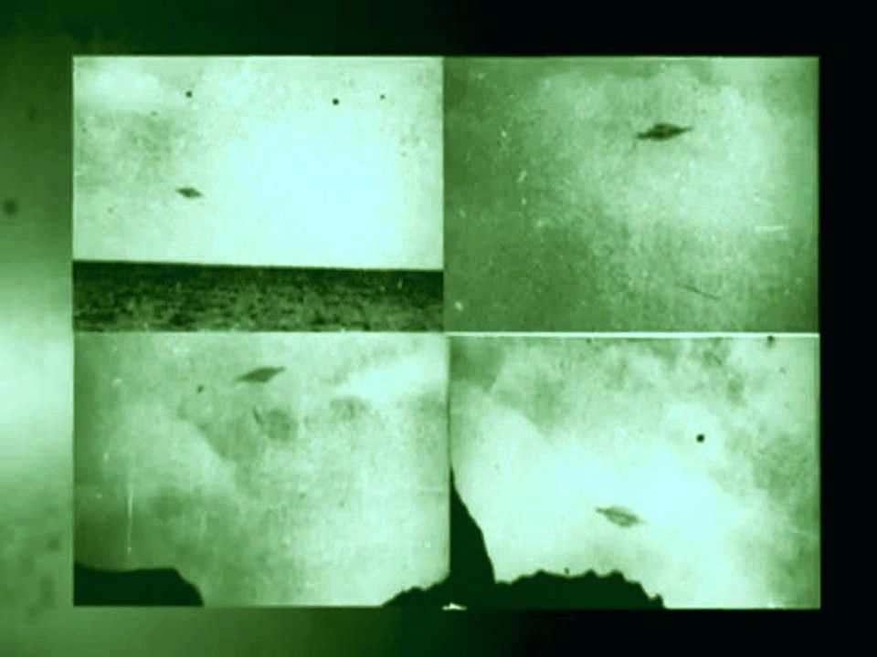 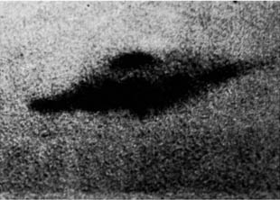 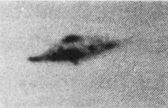
（クリックで拡大）
と、イヤイヤ行なった下の図解、

をざっと眺めただけで以下の点が明瞭に見て取れる。
- 同じ UFO の筈なのに、写真ごとに形状が大きく変化している。
- しかもこの UFO は回転対称でない。左右が対称ではなく歪んでいる。
- 透明になりかけている UFO の写真がある一方で、完全に不透明に見える UFO の写真がある。
- UFO の輪郭だけが煙を纏ったように不自然に ぼやけている 写真がある。
この上の 4点は、
- (a) ET の操る UFO は光学的に歪むような力場に囲まれているからだ
などと強引に解釈する5よりも
- (b) この "UFO" の正体は「自転する orb」だ
と解釈する方が無理がない。a を支持するような他の UFO 事例はほとんどない1。対して、b を支持する事例は多数あり、過去記事でも取り上げてきた2。
さらに、上記の 4点からこの "UFO" 写真は捏造ではないとほぼ断定できる。捏造する際、わざわざ写真ごとに形状を変化させたり、左右非対称にしたり、UFO の周囲を煙を纏ったようにぼやけさせる…なんて余計な小細工をする意味がないゆえに。
なお、公表されているこの "UFO" の推定サイズ（直径 40m とか）は誤っている。誤っている理由については過去記事4 で説明ずみ。
以上により、この「ブラジル政府公認の UFO 写真」の正体については「ほぼ解決済み」3と見なして良いのではないか。
脚注
1. Adamski の撮影した UFO 映像の一部には、歪んだ UFO がある。だが、その映像は稚拙な捏造の結果として無理なく説明できる。 ↩
2. たとえば以下の過去記事。 ↩
1966-04-02, Australia : 有名なポラロイド写真の UFO ⇒ この正体は 自転する orb （途中4） (2023-04-05)
1971-09-04、コスタリカ：政府の航空測量写真に写り込んだ鮮明な湖上の 巨大 UFO の謎を解く (途中2) (2023-04-04)
3. 「解決済み」に「ほぼ」という言葉を追加したのは、orb の発生機序の詳細が未解明なためであって、この "UFO" の正体が orb である事それ自体については「ほぼ」は不要だと判断している。 ↩
4. 以下の過去記事。 ↩
Jimmy Church の体験 : Mt. Adams の山頂の裏から巨大な円筒形 UFO が出現するのを大勢で目撃 (2022-05-17)
5. 後述のように Web を漁って調べた範囲では、a のような主張すら存在しないようだ。つまりこの UFO が非対称であることや、形状が変化している事を、この 65年の間、否定派を含めて誰も問題にしていないように思える。 ↩
(2023-04-10 end)
(2022-09-29 begin)前置き
- 歴史的に重要な UFO 事例なので Web から主要な資料を集めた。後日、参照するため。 - 原文とその DeepL 訳。Web 記事は長期的に見るとサイト消滅で消える事が少なくないので保全の意味を兼ねてまるごと引用している。この UFO の正体
- 過去記事でも述べたが、この UFO の正体は 撮影地点の付近を浮遊していた「自転する orb 」だ というのが私の判断。 - 撮影された何枚かの写真（下の資料に添付されたもの）にはその判断を支持する証拠（決定的な証拠とまでは言えないが…）が写っている。というか、上に掲載した写真だけを見ても「UFO にしては奇妙」な箇所（複数）に気づく筈だが 60年以上、誰もそれを指摘していないようだ。
資料0: 巨大サイズの画像
- Web で 7MiB の画像を見つけた（URL は忘れた。画像検索すればヒットする筈）が、FC2Blog では 2MiB の画像サイズまでしか upload できない。縮小し、画像の質も落として 1.8MiB に抑えた画像が下。 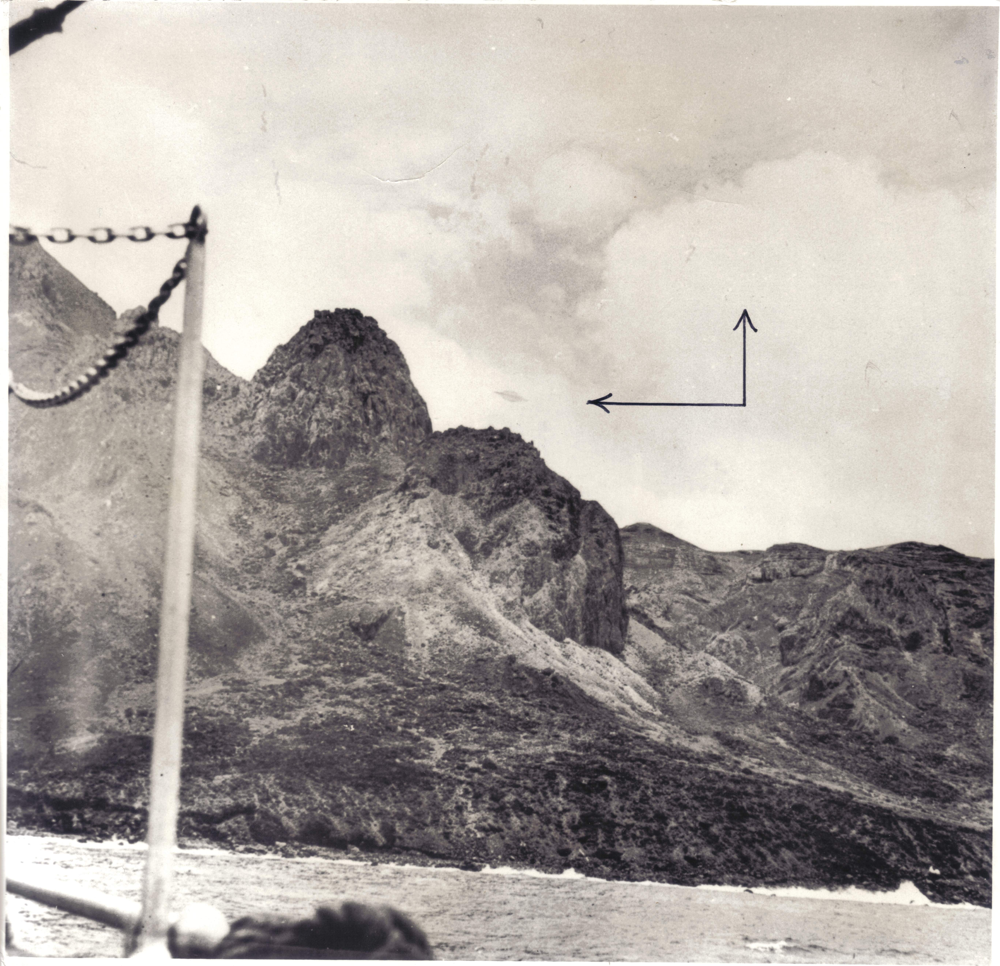 （クリックで拡大）
資料1: 原文 と DeepL 訳
出典: http://ufosightingshotspot.blogspot.com/2013/07/the-trindade-island-ufo-incident-in.htmlブラジルのトリンダーデ島UFO事件(動画) トリンダーデ島事件(1958年1月16日)は、その状況とブラジル当局の公式な関心の高さから、UFO学の最も有名な写真事例の1つとなっています。 Wendell Stevens中佐から譲り受けたOpen Mindsのアーカイブには、この事件を記録したいくつかの写真とその他のアイテムがあります。 これらの写真の裏には "APRO "のコピーライトスタンプが押されており、この封筒はその原本が送られたものと思われる。 有名な民間写真家、アルミロ・バラウナが撮影したものです。南大西洋のトリンダーデ島で国際地球物理年のための調査を行っていたブラジル海軍の練習船アルミランテ・サルダーニャ号に乗船して撮影したものである。同艦にいた多くの将校、船員、民間人がUFOの目撃を確認し、海軍はこの事件を調査したが、当初は秘密にしていた。しかし、その資料がブラジル大統領ジュセリーノ・クビチェクに届くと、大統領はマスコミに公開し、写真は世界的なニュースとなった。 動画(5:24) UFO over Trindade Island, Brazil January 16, 1958▼展開
The Trindade Island UFO incident in Brasil (Video) The Trindade Island incident (January 16, 1958) is one of ufology's most famous photographic cases because of its circumstances and the official interest it received from Brazilian authorities. In the Open Minds archives, which were passed on by Lt Col. Wendell Stevens, There are several photographs and other items that document this event. These photos' all have this "APRO" copyright stamp on the back and this envelope looks as if it is what the original images were sent in. Well-known civilian photographer, Almiro Barauna, took the pictures. He took the photo while onboard the Brazilian Navy training ship Almirante Saldanha, which was conducting research for the International Geophysical Year at the island of Trindade in the South Atlantic Ocean. Many officers, sailors, and civilians on the ship confirmed the sighting of a UFO, and while the navy investigated the case, it was initially kept secret. But when the dossier reached Brazil's President Juscelino Kubitschek, he released it to the press and the photos made worldwide headlines.
資料2: 原文 と DeepL 訳
出典: http://www.aliens-everything-you-want-to-know.com/BrazilianNavyCase.html 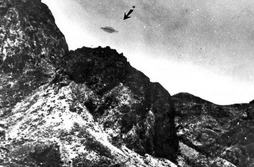ブラジル海軍事件 ブラジル海軍のUFO写真 1958年5月、ブラジル海軍の艦船に乗船していたアルミロ・バラウナが撮影したUFO写真の1枚。 ブラジル海軍事件 1958年1月16日、南大西洋のティニダデ島付近で訓練中、48人の船員と艦長のカルロス・アルベルト・バセラ全員が数機の空飛ぶ円盤が飛んでくるのを目撃しました。この出来事は、船に乗っていた2人の民間人も目撃している。その中には、カメラを持っていた技術写真家のアルミロ・バラウナも含まれていた。 一連の写真 バラウナは、一連の写真を撮影することができた。動くものを撮影した連続写真というのは、ごまかしがきかないので印象に残る。しかも、この写真はすべて、船に同乗していた軍人の立会いのもとで撮影された。撮影は白昼の正午頃、船内の仮設暗室で行われ、すぐに現像された。バセラ船長は、フィルムが改ざんされていないことを確認するために、自ら現像作業を見ていた。 UFOの位置の地図 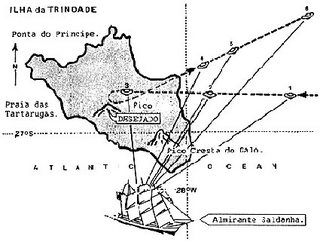 UFOとブラジル海軍の船の位置関係を示した地図。 大統領が確認 2月21日、ブラジル大統領Juscelino Kubitschekは、海軍がこの写真を徹底的に分析し、大統領自らがその真偽を保証すると名乗り出た。 ジュピター？ この事件はあまりにも有名で、笑い話にもならないが、典型的な例でもある。数年後、キャンベルという人が、写真を分析したところ、UFOは本当に木星であったと言いました。50人が全員、木星を何か別のものと勘違いしたわけですか？ある国の大統領は、木星をUFOだと言って、自分の評判を危険にさらしたのだろうか？ あなたのことは知らないが、私は正午12時の白昼の木星を見たことがない。しかも、写真で見ると、木星は小さな斑点としてではなく、巨大なものとして写っている。宇宙船じゃないかもしれないけど、木星だと言ってバカにした発言をさせないようにね!▼展開
Brazilian Navy Case Brazilian navy UFO photo One of the UFO photos taken by Almiro Barauna while aboard Brazilian Naval vessel in May, 1958 Brazilian Navy Case While on training exercises on January 16, 1958 in the South Atlantic Ocean near Tinidade Island, forty-eight seamen and the ship's captain Carlos Alberto Bacellar all saw several flying saucers fly by them. The event was also witnessed by two civilians who were on board. Among the civilians was a technical photographer, Almiro Barauna, who had his cameras with him. A Series of Photographs Barauna was able to take an entire series of photographs. A series of photographs of a moving object is always impressive because they are hard to fake. Not only that, but these photographs were all taken in the presence of the military men on board the boat. The photographs were taken in broad daylight around noon and were developed immediately in a makeshift darkroom on the ship. Captain Bacellar personally watched the development process to insure the film was not tampered with. Map of UFO location Map showing location and position of UFO and Brazilian Navy ship The President Confirms It On February 21 the president of Brazil, Juscelino Kubitschek, came forward and stated that the Navy had thoroughly analyzed the photographs and that he, the president, personally vouched for their authenticity. Jupiter? This case is so well documented it is not even funny, but it is also a good example of what typically happens. Years later a guy named Campbell said he had analyzed the photographs and the UFO was really the planet Jupiter. So fifty people all mistook Jupiter for something else? The president of an entire nation jeopardized his reputation by stating that Jupiter was a UFO? I don't know about you, but I have never seen Jupiter in broad daylight at twelve o'clock noon. And when you see the pictures, Jupiter doesn't appear as a tiny spec, it's huge. Maybe it wasn't a space ship, but don't let people feed you ridiculous statements and tell you it was Jupiter!
資料3: 原文 と DeepL 訳
出典: https://ufologie.patrickgross.org/htm/brazil58.htm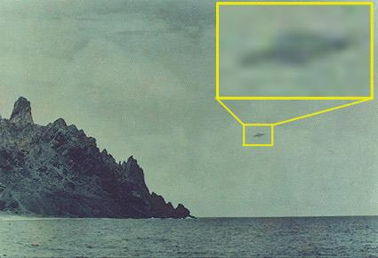 至近距離で見るUFO。トリンダーデ写真事件、ブラジル1958年、ポカンティコ発表会 パトリック・グロス - 読了時間：8分 1958年のトリンダーデ島写真事件。 トリンダーデUFOは、相当数の有資格観測者によって撮影され、目撃された。この事件は、簡単に言えば、1958年1月16日、現地時間12時20分に、ブラジル沖のトリンダーデ島で、少なくとも47人の視覚的目撃者が1分から2分の日周円盤を観察したものである。この事件の特殊性は、その物体が写真に撮られたことである。▼展開
UFOs at close sight: Trindade photographic case, Brazil 1958, Pocantico presentation Patrick Gross — Read time: 8 minutes The Trindade Island photographic case of 1958: The Trindade UFO was photographed and seen by a significant number qualified observers. The case is, shortly said, a one to two minutes dailight disk observation by at least 47 visual witness on January 16, 1958, at 12:20 local time, at the Trindade Island, off the coast of Brazil. The particularity of the event is that the object has been photographed.Almiro Barauna氏の写真の一枚。 センテンスの表です。 クリック! イベントの様子。 クリック! 写真と画像 クリック! 簡単なディスカッション クリック 見積もり ポカンティコ会議での事例発表。 クリック Joao Martinsによる写真家のインタビュー。 クリック! IURマガジンによる写真家のインタビュー。 クリック UFO百科事典 "のドキュメント。 クリック! NICAPによる全記録 クリック IGYによる写真解析。 クリック 参考文献 海軍の写真事件、ブラジル1958年 トリニダード島の地図で、船の位置とUFOの軌跡をバラウナの写真が撮影された位置と一緒に示している。▼展開
One of Almiro Barauna's photos. Table of centents: Click! The event. Click! Photographs and images. Click! Brief discussion. Click! Quotes. Presentation of the case at the Pocantico conference. Click! Interview of the photographer by Joao Martins. Click! Interview of the photographer by the IUR Magazine. Click! Documentation from "The Encyclopedia of UFOs." Click! The full account by the NICAP. Click! The photo analysis by IGY. Click! References. Navy photographic case, Brazil 1958: Map of Trinidad Island showing the location of the ship and the trajectory of the UFO with the position where Barauna's photographs were taken:トリニダッド地図 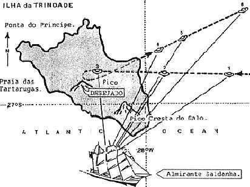 1958年2月21日、ブラジルの新聞「Correio de Manha」と「O Jornal」は、南大西洋のトリニダード島沖を飛ぶ、中央にリングを持つ楕円形の物体を写した日中の連続写真を発表した。この写真は、国際地球年（IGY）のための調査を行っていたブラジル海軍の練習船NEアルミランテ・サルダーニャ号で、プロの民間カメラマン、アルミロ・バラウナが撮影したものである。海軍は当初この件を秘密にしていたが、最終的にブラジル大統領ジュセリーノ・クビチェクによって写真が報道陣に公開された。(写真をご覧ください。)0 また、海軍大臣のアルベス・カメラ提督などの高官も、この写真を保証するようにマスコミに引用された。同大臣は大統領との週1回の会談後、United Pressに対し、"海軍は説明できないので明かせない大きな秘密を持っている "と述べた。1 2月27日、下院のセルジオ・マガリャエス副議長は、海軍がトリンダーデ島に維持するIGY基地での写真や過去のUFO観測に関するいくつかの質問に答えるよう海軍省に正式に要請した。2▼展開
Map of Trinidad On February 21, 1958, the Brazilian newspapers Correio de Manha and O Jornalpublished a sequence of clear daytime photographs showing an oval object with a ring in the center, flying off the island of Trindade in the South Atlantic Ocean. The photos were taken by a professional civilian photographer, Almiro Barauna, on board the Brazilian Navy training ship NE Almirante Saldanha, which was conducting research for the International Geophysical Year (IGY). The Navy at first kept the matter secret, but the photos were eventually given to the press by the President of Brazil, Juscelino Kubitschek. (See the pictures.)0 Other high-ranking officials such as the Minister of the Navy, Admiral Alves Camera, were quoted in the press vouching for the photos. Following his weekly meeting with the President, the Minister told the United Press that "the Navy has a great secret which it cannot divulge because it cannot be explained." 1 On February 27th, Deputy Sergio Magalhaes of the House of Representatives formally requested the Navy Ministry to answer several questions about the photos and other prior UFO observations at the IGY post, maintained by the Navy in Trindade Island. 2海軍は結局、トリンダーデ海洋観測所のカルロス・アルベルト・フェレイラ・バセラ艦長（CC）が作成した「トリンダーデ島で目撃された未確認飛行物体観測の解明、57/12/5から58/1/16の期間に」という詳細な報告書を発表した。報告書は、1957年12月初旬から1958年1月中旬にかけて、同ステーションで海軍の乗組員や作業員が目撃した4件のUFOについて短くまとめており、バセラ船長がセオドライト（垂直・水平角度を測定する測量器）で見た現象が含まれています。昼間に4回、夜間に1回観測され、1回はカモメの可能性が高いとされた。 そして、「船尾の甲板にいたプロの民間カメラマンが、打ち上げの巻き上げ作業を撮影しようとしたところ、「UFOを警戒」し、その物体が写っている写真を4枚撮影することができた」と紹介している。その決定的な展開の詳細が語られている。▼展開
The Navy eventually released a detailed report on the matter entitled "Clarification of the observation of unidentified flying objects sighted on the Island of Trindade, in the period of 12/5/57 to 1/16/58," prepared by Captain of Corvette (CC), Carlos Alberto Ferreira Bacellar, Commander of the Oceanographic Station at Trindade. The report begins with a short summary of four UFO sightings by Navy crewmen and workers at the station from early December 1957 to mid-January 1958, including a phenomenon seen by Captain Bacellar with a theodolite (a surveying instrument for measuring vertical and horizontal angles). Four observations occurred in daytime and one at night; one was considered likely to be a seagull. The report then introduces Almiro Barauna as "a professional civilian photographer who was on deck in the stern of the ship, ready to photograph the operation of hoisting the launch," when he was "alerted about the UFO" and was able to take four photographs showing the object. The crucial details of the development of the film are discussed:「上記の写真を撮った後、写真家はCCバセラや他の人の立会いのもと、カメラからフィルムを取り出した。その後、この職員と一緒に船の暗室（医務室に作られた）に行き、シャツと短パンという格好で、10分間だけそこに留まったが、すぐにフィルムのネガをCCバセラに見せ、彼はフィルムがやや暗いので鮮明度はかなり低いがネガ上に表された上記のUFOを見たことを確認したこと。 " 3 報告書の事実を分析すると、アルミランテ・サルダンハ号の甲板には「様々な資格-労働者、船員、歯科医、医者、航空士、プロの写真家」の目撃者がいたことが確認されたが、正確な数は書かれていない。UFO研究センターが発行したウィリー・スミス博士の報告書によると、「全部で48人の目の目撃者が事件の間甲板上にいた」とありますが、この数字の出典は示されていません。この中には、船員、作業員、船の歯科医、そしてバルアナとブラジル空軍大尉（退役）J.T.ビエジャスが所属していた民間の潜水艦グループのメンバーが含まれていた。4▼展開
"That, after having taken the above-mentioned photographs, the photographer, in the presence of CC Bacellar and other persons, took the roll of film from the camera; later, in the company of this official he went to the darkroom of the ship (improvised in the infirmary), dressed as he was in shirt and shorts, and where he remained only ten minutes, presenting at once the negative of the film to CC Bacellar, who affirms having seen the above-mentioned UFO represented on the negative, although with much less clarity because the film was somewhat dark." 3 An analysis of the facts in the report confirms there were may witnesses on deck of the Almirante Saldanha of "various qualifications - workmen, sailors, dentist, doctor, aviation officer and professional photographer," but no exact number is given. A report by Dr. Willy Smith, published by the Center for UFO Studies, indicates that "all in all, 48 ocular witnesses were on deck during the incident," although no source for this figure is provided. These included sailors, workers and the ship's dentist, as well as members of a civilian submarine diving group to which Baruana and Brazilian Air Force Captain (Ret.) J.T. Viejas belonged. 4ビエジャス船長の目撃談は、ブラジルの新聞に掲載された。 「最初の光景は、燐光に輝く円盤で、昼間でも月より明るく見えた。その物体は見かけの大きさ（角の直径）は満月と同じくらいであった。赤道で大きなリングかプラットフォームで囲まれた扁平な球体である。その速度は、地平線に消える瞬間、時速700マイル[1,100 km./h.]程度であった". ビエハス船長は、この目撃は午後12時20分に起こり、「船内は大変な混乱に陥った」と付け加えた。バラウナ氏は、周囲の興奮した観測者に押されたり引かれたりして、カメラの操作が非常に困難であった"。5 CCバセラもアルミランテ・サルダンハ号の船長ホセ・サルダンハ・ダ・ガマもこの現象を観察していないが、この現象による騒ぎは見ていた。▼展開
Captain Viejas' eyewitness description of the incident was published in the Brazilian press: "The first view was that of a disc shining with phosphorescent glow, which -even at daylight - appeared to be brighter than the moon. The object was about the apparent size (angular diameter) of the full moon. As it followed its path across the sky, changing to a tilted position, its real shape was clearly outlined against the sky: that of a flattened sphere encircled, at the equator, by a large ring or platform. Its speed was around 700 miles an hour [1,100 km./hr.] at the moment it disappeared into the horizon." Captain Viejas added that the sighting occurred at 12:20 p.m., causing "a tremendous confusion aboard. Mr. Barauna found it very difficult to operate his camera, being pushed and pulled by excited observers around him." 5 Neither CC Bacellar nor the Captain of the Almirante Saldanha, Jose Saldanha da Gama, observed the phenomenon, although they did see the commotion caused by the event.バルアナはブラジルの記者に詳細なインタビューを行った。彼のカメラはローライフレックス2.8カメラ、モデルEで、"スピード125、絞りF8でセット "した。彼は最初の2枚の写真を撮った後、物体は "Desejado "の峰の後ろに姿を消した。その後、UFOは再び現れ、"サイズが大きくなり、反対方向に飛んでいたが、前より低く、近く、より速い速度で動いていた。3枚目の写真を撮った。4枚目と5枚目の写真は、バラウナが他の目撃者に押されたときに失われてしまった。最後の写真は、物体が海に向かって戻っていくところを撮ったものである。 海軍省で4時間の尋問を受けたことも明らかにした。 「数日後、また呼び出された。今度はローライフレックスも要求された。目撃した瞬間の円盤の速度を推定するために、テストをしてほしいというのだ。テストは行われた。その結果、私は14秒間に6枚の写真を撮影し、円盤は時速900キロから1000キロで飛行していることがわかった。[時速550kmから600km]で飛行していることがわかった。" 6▼展開
Baruana gave detailed interviews to Brazilian reporters. His camera was a Rolleiflex 2.8 camera, model E, "set at speed 125, with the aperture at f/8." He shot the first two photos before the object disappeared behind the peak "Desejado." The UFO then reappeared, "bigger in size and flying in the opposite direction, but lower and closer than before, and moving at a higher speed. I shot the third photo." The fourth and fifth photos were lost when Barauna was pushed by other witnesses. The last photo in the roll of film was taken when the object was moving back toward the sea. Barauna also disclosed that he had been interrogated for four hours at the Navy Ministry and that: "Some days later I was called again. This time they [Navy] also asked for my Rolleiflex. They wanted to make tests in order to estimate, if possible, the speed of the flying saucer at the moment of the sighting. The tests were performed. They showed that I had taken my six pictures in 14 seconds, and that the saucer was flying at 900 to 1,000 km./hr. [550 to 600 mph]." 6ネガは、クルゼイロ・ド・スル航空写真測量局の海軍と民間の専門家によって分析された。先に引用した海軍の文書によると、水路海軍部の技術者は、"撮影された物体 "を示すネガに改ざんの痕跡はないと結論づけたという。Cruzeiro do Sul（民間航空会社）の写真技術者によって、"より完全で徹底した検査 "が行われました。"粒状性の検証、兆候の検証、輝度、輪郭の詳細のための顕微鏡検査も含む"。Cruzeiroの専門家はこう結論づけた。 "上記のネガにはモンタージュの痕跡はなく、全ては本当に撮影された物体のネガであることを示している。 「しかし、そのためには、極めて高い技術力とそれを実行するのに適した環境が必要である。"後のモンタージュの仮説はすべて取り除かれた。▼展開
The negatives were analyzed by Navy and civilian experts from the Cruzeiro do Sul Aerophotogrammetric Service. The previously cited Navy document states that a technician from the Hydrographic Navy Department concluded there were no signs of tampering with the negatives which showed "the object photographed." A "more complete and thorough examination" was made by photo technicians from Cruzeiro do Sul (a private airline company), "including microscopic, for the verification of granulation, verification of signs, luminosity, and details of contour." The Cruzeiro experts concluded: "There was on the above-mentioned negatives no sign of montage, all indicating it to be a negative of the object really photographed; "Any hypotheses of later montage were removed; it would be impossible to prove either the existence or nonexistence of prior montage, which requires, however, extreme technical skill and circumstances favorable to its execution."海軍の最終結論は非常に慎重なものであった。それは、バラウナが高度な技術を持つ写真家であり、UFOモンタージュの経験もあるという評判で、彼は以前1952年のバラ・デ・ティジュカUFO写真事件に反論しながら見せていたのである。この写真に関する報告書の最終的な結論は次の2点である。 「最も強力で有効な証言である写真家の証言は、写真によるモンタージュがあったかどうかを証明することが技術的に不可能であるため、決定的な説得力を失っている。 「最終的に、個人的な証言と写真家の存在は、関係する状況を考えると、ある程度の価値があり、UFOの存在を示すものがあると認めることができる[原文に下線あり]。7▼展開
The Navy's final conclusion was very cautious, due to Barauna's reputation as a highly skilled photographer with some experience in UFO montages, which he had previously shown while refuting the 1952 Barra de Tijuca UFO photo case. The report's two final conclusions regarding the photos are: "That the strongest and most valid testimony, that of the photographer, loses its definitely convincing character given the technical impossibility of proving if there was or not previous photographic montage. "That, finally the existence of personal testimonies and of a photographer, of some value given the circumstances involved, permit the admission that there are indications of the existence of the UFO [underlined in the original]." 7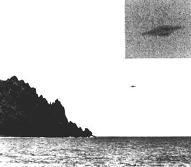 バラウナ氏撮影の1枚目 トリンダーデ島沖でブラジル海軍の艦船から撮影されたバラウナによる最初のUFO写真の拡大図。 UFOの拡大写真も挿入されている。 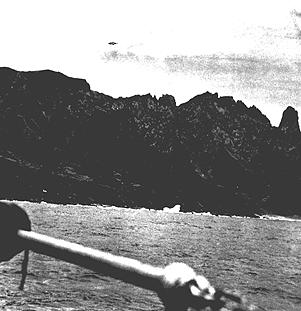 バラウナ氏撮影の2枚目の写真 バラウナ氏撮影の2枚目のUFO写真の拡大写真。写真（いずれも）提供：ICUFON Archives ブラジル海軍の報告書の慎重で中立的なスタイルとは対照的に、リオのアメリカ海軍アタッシェ、海軍情報局（ONI）と航空技術情報センター（ATIC）のプロジェクト・ブルーブックは、トリンダーデ島のUFO写真を悪名高いデマであると躊躇なく断定した。海軍アタッシェからのONI情報報告書は、この事件とブラジル海軍の立場に関する貴重なデータを含んでいるが、非常に斜に構えた否定的な文体で書かれている。この報告書は、バラウナのことを「写真撮影のトリックショットの長い歴史」を持ち、「すべては悪徳カメラマンによる偽の売名行為であり、ブラジル海軍はそれに引っかかったのだ」と指摘している。しかし、極めつけは、米海軍のサンダーランド大尉による最後の結びの言葉である。▼展開
1st Photograph by Barauna Enlargement of first UFO photograph taken by Barauna from a Brazilian Navy ship off Trindade Island. Insert shows enlargement of UFO itself. 2nd photograph by Barauna Enlargement of second UFO photograph taken by Barauna. Photographs (both) courtesy of ICUFON Archives. In contrast to the careful and neutral style of the Brazilian Navy report, the U.S. Naval Attaché in Rio, the Office of Naval Intelligence (ONI) and Project Blue Book at the Air Technical Intelligence Center (ATIC), did not hesitate to label the Trindade Island UFO photos as a notorious hoax. The ONI Information Report from the Naval Attaché, while containing valuable data about the case and the position of the Brazilian Navy, is written in a very slanted negative style. It labels Barauna as a man with "a long history of photographic trick shots" and suggests that "the whole thing is a fake publicity stunt put on by a crooked photographer, and the Brazilian Navy fell for it." The coup de grace, however, is the final concluding remark by Captain Sunderland, USN:"報告官の私見では" "トリンダーデの不毛の島で空飛ぶ円盤はありえない" "火星人は極めて快適さを好む生き物であることは 誰もが知っている" "そうだ" 8 プロジェクト・ブルーブックのコンサルタントを務めたノースウェスタン大学の天文学者、J・アレン・ハイネック博士は、"このような偏見と軽薄さは科学的調査にはふさわしくない "と適切な見解を示している。9 同様に、ブルーブックは「ATICによるブラジルの写真の分析から、おそらくデマであろうという結論に達した」と断定したが、「記録カード」では「このセンター（ATIC）は写真のコピーを入手することができなかった」と認めている。 10 バラウナの写真は、ブラジルとアメリカのマスコミやいくつかのUFO団体に広く公開されていたにもかかわらず、である。 ブラジルのUFO研究家のパイオニアで医学博士のオラヴォ・T・フォンテスは、アメリカの航空現象研究機構（Aerial Phenomena Research Organization: APRO）のために、ブラジルの新聞に掲載されたすべての公式声明とインタビューの原稿を含むこの事件に関する膨大な報告書を編集している。フォンテス氏は、トリンダーデ島沖での追加目撃や、海軍の艦船トリデンテとトリウンフォからの大西洋での観測、ブラジルとアフリカの間に位置し、「米国の誘導ミサイルと衛星追跡局」が設置されたばかりのフェルナンド・ノロンハ島での目撃を公開した。しかし、ノローニャ島の報道について、フォンテス社からの正式な確認はなかった。11▼展開
"It is the reporting officer's private opinion that a flying saucer would be unlikely at the very barren island of Trindade, as everyone knows Martians are extremely comfort loving creatures." 8 Dr. J. Allen Hynek, Northwestern University astronomer serving as consultant to Project Blue Book, observed appropriately that "such bias and flippancy have no place in scientific investigations." 9 Likewise, Blue Book was quick to determine that "analysis of the Brazil picture by ATIC led to the conclusion that it was probably a hoax," although a "Record Card" admits that "this center [ATIC] has been unable to obtain copies of the photos." 10 This, despite the fact that Barauna's photos were widely available to the press and several UFO organizations both in Brazil and the United States! Olavo T. Fontes, the late pioneer Brazilian UFO investigator and medical doctor, compiled an extensive report on the case for the Aerial Phenomena Research Organization (APRO) in the U.S., with transcripts of all the official statements and interviews published in the Brazilian press. Fontes disclosed additional sightings off Trindade Island, as well as other observations in the Atlantic Ocean from the Navy ships Tridente and Triunfo, and on the island of Fernando Noronha, located between Brazil and Africa, where "a U.S. guided missile and satellite tracking station" had just been set up. No official confirmation of the Noronha reports, however, was provided by Fontes. 11脚注 0. Fontes, Olavo T., M.D., "UAO Sightings Over Trinidad," originally published in three parts in The A.P.R.O. Bulletin, Alamogordo, New Mexico, January, March, and May 1960; reprinted in full as "The Brazilian Navy UFO Sighting At The Island Of Trindade," Flying Saucers, Amherst, Wisconsin, Feb. 61. 1. 1958年2月25日、リオデジャネイロからのUnited Press Newsワイヤー； Fontes, O.T., ibid.に再録。 2. 同上。 3. ブラジル海軍省、艦隊参謀本部、情報部からの 6 ページ文書、「SUBJECT: トリンダーデ島で目撃された未確認飛行物体の観測に関する明確化、57年12月5日から58年1月16日の期間". フィラデルフィアのアメリカ哲学協会で故エドワード・U・コンドン博士の論文にある英訳。 4. 4. Smith, Willy, "Trinidad Revisited," International UFO Reporter, CUFOS, July/August 1983.に掲載された英文訳。 5. Fontes, O.T., ibid. 6. 6. Almiro Barauna, O Globo, Rio de Janeiro, February 24, 1958 のインタビュー、Fontes, O.T., ibid に再掲載。 7. ブラジル海軍の報告書、同上。 8. 8. Sunderland, M., Capt., USN, ONI Information Report re "Brazilian Navy - Flying Saucer Photographed from ALMIRANTE SALDANHA," March 11, 1958; reprinted in Hynek, Dr. J. Allen, The Hynek UFO Report, Dell, 1977. 9. Hynek, 同上. 10. フィラデルフィアのアメリカ哲学協会にあるコンドン文書の中のATIC文書。 11. Fontes, O.T., ibid.▼展開
Footnotes: 0. Fontes, Olavo T., M.D., "UAO Sightings Over Trinidad," originally published in three parts in The A.P.R.O. Bulletin, Alamogordo, New Mexico, January, March, and May 1960; reprinted in full as "The Brazilian Navy UFO Sighting At The Island Of Trindade," Flying Saucers, Amherst, Wisconsin, Feb.'61. 1. United Press News wire from Rio de Janeiro, February 25, 1958; reprinted in Fontes, O.T., ibid. 2. Ibid. 3. 6 page document from the Brazilian Department of the Navy, General Staff of the Fleet, Subdivision of Information, "SUBJECT: Clarification of the observation of unidentified flying objects sighted on the Island of Trindade, in the period of 12/5/57 to 1/16/58." English translation in the papers of the late Dr. Edward U. Condon at the American Philosophical Society in Philadelphia. 4. Smith, Willy, "Trinidad Revisited," International UFO Reporter, CUFOS, July/August 1983. 5. Fontes, O.T., ibid. 6. Interview with Almiro Barauna, O Globo, Rio de Janeiro, February 24, 1958; reprinted in Fontes, O.T., ibid. 7. Brazilian Navy report, ibid. 8. Sunderland, M., Capt., USN, ONI Information Report re "Brazilian Navy - Flying Saucer Photographed from ALMIRANTE SALDANHA," March 11, 1958; reprinted in Hynek, Dr. J. Allen, The Hynek UFO Report, Dell, 1977. 9. Hynek, ibid. 10. ATIC documents in the Condon papers at the American Philosophical Society in Philadelphia. 11. Fontes, O.T., ibid.
資料4: 原文 と DeepL 訳
出典: https://www.planetabenitez.com/ovnis2/1958brasil.htm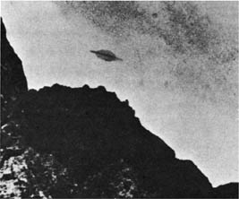 の調査 :::: UFO画像 読了時間：29分 日付：1958年1月16日 場所：ブラジル、トリニダッド島。 AUTHOR: © Barauna ブラジル：世界初のUFO公式認識 この年は「早起き」の年だった。1958年の始まりから数日後、世界のUFO学においてもうひとつの「古典的」な事件がすでに起こっていた。1月16日、正午過ぎ、ブラジルの練習巡洋艦アルミランテ・サルダーニャがトリニダッド島の港の沖合に停泊していた。ブラジル海軍の船は300人を乗せ、国際地球物理年にちなんだ一連の水路実験を行っていた。 午前12時25分、サルダンハが出航準備をしているとき、乗組員が島に近づいてくる非常に明るい物体を発見した。その装置は、クルーズ船のデッキに集まった人たちから常に丸見えで、島の峰の一つ上を滑空し、まもなく海の水平線に向かって走り去っていったのです。 乗組員の中にはバラウナ氏もいて、UFOの写真を6枚撮影することができた。ローライフレックスカメラE型、F2.8レンズ、スピードI/125秒、絞りF8を使用したため、現像時に露出オーバーと硬い粒子が発生してしまったのである。その物体は濃い灰色をしており、主に前方で緑色をした燐光性の蒸気のような凝縮物や霧に囲まれているように見えた。目撃者は数十人で、明らかに金属性の構造物を見た。UFOは、うねるようなコウモリのような動きで飛び、急に速度を変えた。常に無変化で。まるでジャンプしているかのように...。 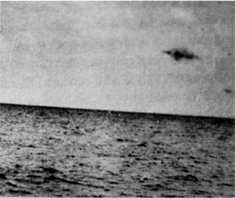 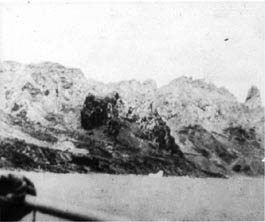 シーケンス その時、サルダンハのエンジンが故障し、全電源が喪失した。コンパスは激しく回転し、無線周波数は変化し、無線信号は消え去った。船長も役員も、すぐにバラウナの写真を見たいと言ってきた。そこで、彼らは船の実験室に行った。この開発は、このブラジル海軍の将校数名の前で、本艦のカルロス・A・バセラ司令官が赤色レンズのトーチを持ちながら行われた。 サルダンハ号にはコピー用の印画紙がないので、目撃者はネガを観察して満足するしかなかった。 多くの船員が目視で確認したように、ネガに写ったUFOは、金属的で球状、扁平で灰色がかったものに見えた。土星と同じようなリングを身に着けていた。この "リング "は高速で回転していた。 その物体は赤みがかったオレンジ色をしており、移動しながら緑色の蛍光灯のような光を放っていた。この緑色の光輪は、UFOが島の上空でホバリングしたときにほとんど消えてしまった。 この物体の速度は、将校や船員によって時速約600kmと推定された。その大きさは、直径約100フィート（30メートル）、高さは最大で20フィート（約6メートル）と推定された。 後述するように、この写真は徹底的に分析され、最終的にブラジル政府と海軍によって本物であると宣言された。この真正性をクビツェク社長自らが批准したのである。 オブジェクトの拡張機能 インテリジェンス・サービスの報告書 ここまで、1月16日正午の出来事をごく簡単に要約して見てきた。その結果、ブラジル政府、海軍、情報機関、そしてアメリカ大使館は、もちろん数え切れないほどの手紙や報告書、コミュニケを交換した。 その膨大な資料の中から、あの日、そしてその前の日に大西洋海域で起こったことについて、非常に「明白」な報告書-正確には情報機関からの報告-を抜き出してみた。 1958年3月3日、海軍作戦司令部長のアントニオ・マリア・デ・カルヴァーリョ艦隊司令官は「機密」の封印のもと、トリニダード島での出来事についてブラジル海軍大臣に以下の情報を送っている。 海軍省 海軍作戦司令部 情報部 件名 1957年12月5日から1958年1月16日の間にトリニダード島で記録された未確認飛行物体の観測に関する報告書。 イベント 1. トリニダード島海洋観測所長のカルロス・アルベルト・フェレイラ・バセラ中佐は、1958年1月27日にこの最高司令部に呼ばれ、報告書を提出した。次のように報告した。 I. 1957年12月31日、島の上空で未確認飛行物体が観測され、医官イグナシオ・カルロス・モレイラ・ムルタ少尉、船員1名、作業員5名が目撃した。目撃は午前7時50分頃で、観測者の確信と報告の一貫性と相関性から、彼は今回の調査のきっかけとなったラジオグラムを送ることにした。 II.彼は同じ機会に、同じ物体が以前、1957年12月5日に、同じく午前中、同じ時間に作業員によって目撃されていることを知らされた。 以下、第Ⅲ節の一部を削除し、次のとおりとします）。翌1958年1月1日、同じ時刻、同じ位置で、北に向かって（前回の観測方向と同じ）何かが海上に現れ、信じられない速さで飛行していた。他の観測者の反対意見もあり、また物体の軌道の一部で光度が高かったにもかかわらず、彼はカモメが上空に投影され、立体視の推定が困難になったと結論づけ、現在もそう信じているのである。 IV. 翌日1958年1月2日、今度は夕方20時ごろに再び警報が鳴らされた。この警報は、彼自身が勤務中に全く何も見なかったので却下された（情報将校とは、トリニダード島に駐留していたバセラ大尉のことである）。 V. そして1958年1月16日午前12時15分、島沖に停泊中のアルミランテ・サルダーニャ号で、再び未確認飛行物体の警報が登録されたのである。船は出港準備中で、乗組員は島への航海に使用するディンギーを吊り上げる作業を行っていた。UFOの警報は、船首と船尾の乗組員によって出された。 VI. このとき、船首の甲板にいたプロの民間カメラマンが、ボートの巻き上げ作業を撮影していたため、警告を受け、4枚の写真を撮影することができたのです。 VII. 目撃後、撮影者はバセラ中佐らの立会いの下、カメラからフィルムを取り出し、その後、バセラ中佐とともに、シャツと短パンだけの服装で船内の写真室に入室した。現像は10分ほどで終わり、その後、ネガをバセラ隊長が見てくれた。バセラ中佐は、最初の検査で、前述のネガに写っているUFOを見たが、その後、拡大することで、よりはっきりした詳細を確認したと述べている。 VIII. そして、そのネガを現象を目撃した乗組員に見せたところ、全員が写真に写っている物体が、自分たちが目撃した空中の物体と同じものであることを認めたのだ。 IX. 撮影者の注意を引いたのは、水中でのハンティングを専門とするグループの一員として同船していた空軍大尉（退役）であり、撮影者は同じグループのメンバーであった。 X. 30秒はくだらない写真である。 XI. 撮影者、民間人、乗組員など、目撃したすべての人に強い情緒障害が見られた。 2. また、バセラ中佐は、白昼、高精度のセオドライトを使って、2度にわたって島の上空で自ら観測した現象を報告した。2つ目の観察は、次のようなものだった。 I. 気象観測気球を追いかけていた彼は、気球の計器が落下したことを確認した。 II. 気球の寿命は平均40分で、この時間を過ぎると、高所に到達したために破裂してしまう。 III. 気球はまだ覆われており、高度14000メートルでパラシュートによって計器が落とされた。しばらくして、風船が雲に隠れた地点から水平方向約30度の上空に物体を発見したのだ。 セオドライトで見ると、三日月のような奇妙な形をしており、明るい光を放っていた。この現象は3時間半続き、太陽と同じ角速度で動いていたようだ。 V. 空が完全に巻雲に覆われたときだけ、その物体は姿を消した。 六、その後の赤く塗られた地球儀の寿命、天体の形と光度、月と惑星の位置を考慮しても、彼の行った観測に説明はつかない。 VII. この観測には、医官、数人のアルゼンチン人と海軍の水兵、海軍の水路航海局の民間技術者が立ち会った。 3. 最後にバセラ中佐は、写真を撮ったプロのカメラマン、アルミロ・バラウナ（住所：Praia De Icarai 251, flat 1004, Niteroi）をこの最高司令部に連れてきて、次のように報告した。 I. 彼は、NE Almirante Saldanha号の甲板にいたとき、島に近づいてくる奇妙な物体を観察するよう呼びかけられた；しばらく観察した後、その場所を特定することができた。 II.発見後すぐにカメラを対象物に向け、6枚の写真を連続撮影した。 III. その後、最後の1枚を撮ったところでフィルムをカメラから外し、1時間近くフィルムを手にしたまま、強い精神的動揺から立ち直ろうとした。そして、バセラ中佐に付き添われて暗室へ行き、現像した。 しかし、バセラ中佐は、撮影した物体が現像されたフィルムに写っていないと思い、まだ湿っているフィルムをバセラ中佐に見せました。 V. ネガはそのままリオに持って行き、写真現像所で何枚か拡大した。UFOは2枚の写真にだけよく写っていた。他の2枚のネガは非常に暗かったからだ。 VI. コントラストを上げるために、ネガ全体を均質に明るくする「ライトニング」という作業を行った。しかし、2つのビューにUFOがはっきり写っており、この作業に失敗すると失う恐れがあったため、フィルムをカットして残りの4枚のネガだけを処理した。その結果、2つのビューでUFOが異なる位置にはっきり写っている。 VII. 彼は、UFOを眼で観察したとき、彼の印象は、輪郭がはっきりしない、高速で大きな動きを見せる、暗い色をした固体で、その物体は石鹸の泡に例えられる物質に包まれているように見え、同じ物質の延長を持っているように見え、音なしに動いたと言いました。 VIII. 観察後、彼は緊張と動揺で、フィルムの現像というルーティンワークをこなすのが難しくなってしまった。 IX. 彼は、ネガが本物であることを証明するために、必要なすべての検査と分析のためにこの最高司令部に提供し、トリックを発見する唯一の適切な方法として顕微鏡検査を提案した。 4. 以上、転記した報告書に沿って得られた記述をまとめると、以下のような重要な事実が判明した。 a. 未確認飛行物体の出現は、日を変えて4回、朝3回、夜1回、別々の人物によってトリニティ島上空で観測された。 b. バセラ中佐らは、午前中に一度、カモメと思われるものを観察したが、観察を共にした下士官や水兵は、今でもUFOだと考えている。 c. トリニティ島上空で2回、自分の軍の司令官、海軍の上級士官、気象学と電波探査の経験が豊富な水中写真家、その他の目撃者によって、大気や天体の条件では説明できない現象が観測されたこと。 d. トリニダード島沖に停泊中のNE Almirante Saldanha号のデッキから、撮影された物体を観察したという他の目撃者の立会いのもと、プロの写真家が撮影したUFOの写真4枚を入手しました。 分析する。 前号に含まれる事実の評価が示すとおりです。 a. UFO目撃情報5件のうち、4件は日中、1件は夜間であったこと。 b. 5回のUFO目撃のうち、バセラ中佐が目撃したのは1回だけで、その時はカモメと説明したこと。 c. UFOを目撃したのは、労働者、将校、医師、歯科医師、水兵、軍曹、将校、民間人、プロの写真家など、さまざまな資格を持った人たちであったこと。 d. バセラ中佐が報告した2件を除いて、海軍の将校は記録された現象を目撃していないこと。 e. いずれの場合も、プロのカメラマンを含むUFOを観察したすべての人が、強い情動反応を示したこと。正常と思われる労働者がパニックになって逃げ出したというケースもあった。 f. 無学な人々から良い情報を得ることは非常に困難であるにもかかわらず、この報告書は以下の事実で一致していること。 形状です。古典的なレンズ状の円盤や物体。1957年12月31日、島の上空を横切ったときのある天体（下から見たもの）は、観測者によると球状の輪郭を示したという。遠方から見ると、円盤状で二重のドーム（土星型）になっていた。 色：ある人は未定義、ある人はステンレススチール、多くの人は霧のようなものに包まれていると表現した。 音: すべての目撃者が、物体は音を立てなかったと同意している。 テール：白い足跡のような放電を指摘する人もいれば、否定する人もいる。 大きさ：すべての観測者が、物体は非常に速く動くと同意したが、誰も推定することができなかった。 機動性：どの報告書でも、未確認飛行物体の極めて高い機動性が注目された。その動きは、航空機のような連続的なものではなく、方向や速度が急に変わるような急激なものであった。 高さと距離: 1957年12月31日に島の上空を横切る飛行物体が目撃されたとき、目撃者のみがその高さをデセジャド山の高さと比較し、約3倍、つまり約1800メートルと推定しています。 操縦: すべての報告書は、物体が極めて珍しい操縦を行ったという事実で一致している。 外観：いずれもソリッドボディのそれ。 観測時間：非常に短く、常に秒単位で計算される。 g. UFOを目撃した観測者は、航空機の識別方法を完全に知っていること。島上空の航空機は、すべてのケースで正しく識別され、水路航法省にメモで報告されていること。 h. 撮影状況、フィルムの即時公開、撮影状況、撮影者の精神状態などを考慮すると、船内のラボでフォトモンタージュが行われたわけではないことがわかる。 i. 最も貴重で重要であることが明らかな証拠写真に関しては、それが浮かび上がってくる。 ネガティブな点 I. 現像時にコピーはしていない。 II. 現像後のネガは、後で目撃者の立会いのもとでコピーを取れるように、艦長が所有することはなかった。 III. コピーと拡大写真は、写真家が自身のラボで作成したものです。 ポジティブな点 I. バセラ中佐の報告では、現像直後のまだ湿ったフィルムに、プリントに写っているのが撮影された物体であり、また、物体の通過に関連するシーケンスに先立つスナップショットは、その数分前に船内で撮影されたシーンと一致しているとのことです。 II. 目撃者の証言：写真のコピーを見て、写真に写っているものをそのまま見た、と証言しています。 j. ネガについては、水路航海局の技術者とCruzeiro do Sulの航空写真測量サービスの専門家によって検査され、次のような結果が得られました。 I. 海軍水路部技師は、ネガを分析した結果、自然物であると断言した。 II. Cruzeiro do Sulの航空写真測量局の技術者は、粒状性を確認するための顕微鏡検査、信号の分析、光度と輪郭の詳細の検証を行った結果、次のように断言しました。過去のフォトモンタージュの存在や非存在を証明することは不可能であるが、高精度の技術や実行に適した環境が必要である。 結論 5. 前項で報告された事実の提示と概要分析を考慮すると、結論が導き出されます。 a. トリニダード島上空で未確認飛行物体を見たという目撃者が多数いること。これらの証人は、資格も違えば、観測した日も違う。 b. 提出された報告書の多くは、主に観測者の多くが技術的専門知識を持たず、観測された現象の持続時間が短いため、未確認飛行物体の目撃を報告したかどうかについての結論に達することができない、不十分なものであること。 c. 最も重要で貴重な証拠である写真が、以前のフォトモンタージュを完全に否定することが不可能なため、説得力を失っていること。 d. 未確認飛行物体の目撃を報告した人の感情的な反応は非常に強く、容易に感じ取れること。 e. 最後に、関係する状況を考慮して一定の価値を持つ個人的な報告書と写真証拠が存在することで、未確認飛行物体の存在を示すものがあることを認めることができるということです。 6. 最後に述べた結論から、私は閣下に、この最高司令部がこの問題に関して得られるすべての情報を考慮し、疑いの余地のない結論に到達するよう提案することができます。 人生の皮肉か、それとも別の "何か "か？ このように、ブラジル海軍と情報部は、トリニダード島の事件を世界一重大なものとして受け止めていた。 しかし、トリニダード島の写真の作者である写真家が、UFOのテーマに直接関連した非常に不思議な「物語」の主人公であったことは、ほとんど知られていない。1952年、バラ・ダ・ティジュカの海岸でUFOと「遭遇」した直後、アマチュア写真家のアルミロ・バラウナが「Mundo Ilustrado」という雑誌に「There was a flying saucer close to home...」という記事を発表している（まさに我々の仲間だ）。 この作品でアルミロは、週刊紙オ・クルゼイロの記者が撮影した印象的な写真の真偽に反論し、それまで騙していたいくつかの決まり文句まで提示した。 6年後、バラウナはアルミランテ・サルダンハ号に乗り、いくつかのUFO写真の作者として、UFO学の歴史に名を残すことになる...完全に本物だ。 運命の皮肉か、それとも「何か」なのか......？ 民間の調査 もちろん、トリニダードのUFO事件には、民間や民間の有能な調査員も対応する調査を行ったことは言うまでもない。 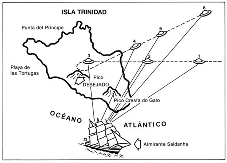 目撃談のスケッチ。 バラウナ自身が、自らの体験を語った。 "12時15分頃、船は島を離れる準備をしていた。その日の朝10時から、私は資材の積み込みと乗組員の移動に立ち会っていたのである。船酔い止めを飲み忘れた私は、揺れに悩まされながら、ローライフレックスを手元に置いて甲板にいた。 "遠征に来ていた同僚から電話があり、何人かの船員の乗船と、桟橋のない島へ行くために使っていた船の吊り下げ操作の手伝いをすることになったのです。 「海が荒れていて、いい写真が撮れそうだと思ったんです。ライカの望遠レンズ付きファインダーは少し前に機内に置いてきてしまったので、水と塩の攻撃から守るためにアルミロッカーに入れておいたローライフレックス（タイプE）を取り出し、レンズF2.8、絞りF8、絞り1/125で撮影するようセットした。" "... 友人と合流しようとした矢先、船酔いで気分が悪くなり、これ以上は無理だと思い、しばらく休んでいました。突然、前方甲板で大きな音がして、私は目を見張った。すぐに2人のチーフ、J. T・ヴィエガスとA・ヴィエイラ・フィーリョは、手を振りながら空のある場所を指さし、明るい物体が島に近づいていると叫んで私を呼び止めた。その時、つまり午後12時20分頃、私が何かを見つけようとしていると、船首から歯科医のホメロ・リベイロ中尉がやってきて、空に飛んでいる物体を指差した。彼は興奮して、甲板に転がっているワイヤーにつまづいていた。しかし、その輝きによって、なんとかその位置を確認することができました。すでに島のすぐ近くまで来ていて、その輝きは自分自身のものなのか、それとも地上の輝きを反射しているのか、よくわからない。なにしろ空が曇っていて、太陽に照らされることができないのだ。公海からやってきて、Crista do Galoポイントに向かっている。デセハド峰の裏側に入る前に、2枚の写真を撮った。しかし、私の機械の調整が悪く、残念ながらネガは露出オーバーになってしまった。その物体は数秒後に山の陰に消え、突然戻ってきて、今度は海に向かっている」。より近く、より大きく感じられた。そして、3枚目の写真を撮りました。 "すぐにあと2枚撮ったのですが、甲板の騒ぎで撮り損ねました。飛行物体は高速で海上に上がってきた。突然止んだように見えたので、この機会に7枚目、ちなみに私のフィルムの最後の1枚を撮りました...。 "約10秒後、それは遠ざかり、ついに姿を消した。" バットのようなスイング 「観測中、その物体は沈黙を守っていた。しかし、海の轟音と船員たちのおかげで、この点は確認できない。 「そのUFOは、明らかに金属的で灰色をした、かなり暗い外観をしていた。その輪郭の周り、特に前面には緑色や燐光のような蒸気の凝縮が見られた。バットのように振って動いていたのを覚えています。 UFOが去った直後、船内は再び静まり返り、その物体を観察できた人たち（合計8人の目撃者）は皆、バラウナの撮った写真が正しく撮れているかどうかを知りたがった。 不思議なことに、アルミランテ・サルダンハ号の5人のクルーのうち、当時カメラを手にしていたのはバラウナだけで、何とか撮影することができたのだが......。他の4人は誰も使おうとは思わなかった。これは、UFO目撃者の間ではごく普通の反応なのだが......。その印象は強く、ほとんどの人がカメラも含め、周りのものを忘れてしまう。 UFOとの遭遇から1時間後、バラウナは海洋観測所長のカルロス・アルベルト・バセラ中佐の立ち会いのもと、フィルムを現像した。 この展開に関する中佐の証言は重要である。 「...風呂から上がってすぐ、まだ濡れている状態でフィルムを見たのですが、検証してみると以下のことが確認できました。 "l. UFOが島を「フライオーバー」するシークエンスの写真は、確かに事件直前に船内で撮影された写真と一致していた。 "2.飛翔のシーケンスの写真には、後にプリントで見えたアーティファクトに似た物体が、異なる位置で写っていた（船内には印画紙も引き伸ばし機もなかった）。 "3. バラウナが興奮したのか、押されたのか、間違ったのは、海と海岸の岩を描いた2つの決まり文句である。これらのネガは、ほぼ全員の乗組員によって検査され、観測の目撃者全員が、見た物体が土星に似た人工物であることを認識したのである。 フィルムを現像している間に、船内の電気機器が停止していることがわかったんだ。また、技術的な不具合により、公海上で3回ほど船が停止した。照明が消えるまで消えていく間、船は停止した。これらの現象が起こるや否や、カフスを持って甲板に駆けつける将校もいたが、空は曇っていて何も見えなかった。その後の航海はあまり活気がなく、サルダーニャ提督はつまずくことなくヴィトーリアに到着し、リオに向けて再び出帆した。 "しかし、バラウナとダイビングクラブの仲間はビトリアに2日間滞在し、自力でバスでリオに戻った。" 14秒以内 ポスト司令官はバラウナにネガを要求し、彼は快くネガを渡してくれた。48時間後にフィルムが返送され、海軍省から「あなた自身の証言を聞かせてください」という招待状が届いた。ブラジル当局との会談を語るバラウナ氏 「私は本省に出頭し、数人の幹部を紹介され、数え切れないほどの質問をされた。軍には2回、自己紹介をしました。 「一次面接の最後に、ネガを預けて調べてもらった。調べてみると、クルゼイロ・ド・スル（Cruzeiro do Sul）の航空写真部に送られたものだった。そこで、4日間連続で勉強した。これらの検査の結果、職員から「不正はなく、疑惑のない書類と認められる」と言われた。 "2回目のインタビューでは、被写体の速度を評価する目的で、いくつかのテストを受けました。私のRolleiflexが通常の撮影のペースで扱われている間に、3人の警官が観察時間を計りました。その結果、6つのビューがすべて14秒間に撮影されたことが判明した。 「また、船の位置を調べることで、この船が加速している間は時速900〜1,000キロメートルで移動していたと推定された。 "そして、クリシェの島の景観を考慮し、正確な地図を使って、その直径は約40メートル、厚さは約8メートルと推定されたのです。取材をしていて気づいたのは、担当者が何度もファイルを確認していることです。その中には、特に私の写真が混じっており、観測の様々な目撃者に写真を見せ、全員が正しく認識していることを知りました。パニックを起こさないために、軍当局が報道機関に公開する許可を出すまで、この出来事について黙っているようにと、彼らに言われたのである。2月末にバセラ司令官から口頭で許可をもらったんだ。 米国大使館が情報提供を要請 トリニダード島での事件から数日後、アメリカはブラジル海軍に次のような手紙を送っている。 アメリカ大使館 海軍アタッシェのオフィス 1958年2月21日、リオデジャネイロ。 ルイス・フェリッペ・ピント・ダ・ルス少将閣下への返信です。 DD 情報担当副主任 海軍の参謀本部。 親愛なる提督よ。 1月16日にトリニダード島沖で目撃されたとされる空飛ぶ円盤を、練習船アルミランテ・サルダンハから撮影した写真など、情報を提供していただけると大変ありがたいのですが。 ご存知のように、このような目撃情報は数多く報告されており、米国は特別委員会を設置して調査を行ってきましたが、明確な結論には至りませんでした。しかし、今日の新聞で報道されたようなことが起こったのなら、この事件の良い証拠となるような、信頼できる聡明な目撃者が十分にいたに違いないと私には思えるのです。 私の最高の配慮と尊敬の念を込めて、よろしくお願いします。 M. サンダーランド 大尉（アメリカ海軍）。べいかいそうかん 4日後、少将はアメリカ海軍アタッシェに返信し、リクエストに応えて写真のコピーを4部送ってきた。 "火星人はチンプンカンプン "と。 しかし、米国の海軍アタッシェが「自分の」報告書のコピーを前述のブラジル海軍中将に渡すとはとても思えない。アメリカ人が「どんな情報でも」と依頼した手紙の丁寧さ、マナー、慇懃さは、前述のサンダーランド氏がアメリカの「軍高官」に送った書類から引用すると、次のような暴言に変わるのである。 情報提供日：1958年2月21日～27日 シリアルナンバー：39-58。 報告書作成日：1958年3月11日 From: US Naval Attaché, Rio de Janeiro. 連絡先：プレス 評価：303. 件名：ブラジル-海軍-サルダンハ提督から撮影された空飛ぶ円盤。 添付資料：ブラジル海軍が撮影した被写体の写真4枚シリーズ。 2月21日、リオデジャネイロの主要2紙は、1958年2月16日正午頃、リオデジャネイロの東約900キロにあるトリニダート島付近に停泊中のブラジル海軍艦船アルミランテ・サルダンハから撮影された空飛ぶ円盤と思われる写真を掲載した。当時、同船はブラジル海軍が国際地球物理年に参加するための調査の一環として従事していた。 写真家：失業中(?)の写真家、アルミロ・バラウナがローライフレックスでスピード125、レンズ絞りBで撮影し、アドミラル・サルダンハの船内のラボで現像した写真である。この方は写真トリックの歴史が長く、海底の宝物のフェイクポートレートなどで有名な方です。また、「空飛ぶ円盤が私を追いかけてくる」と、トリック写真を使ってわざとユーモラスな記事をつくり、雑誌に掲載されたこともある。空飛ぶ円盤」を撮影した最新の写真が発表された後、バラウナは記者団に対し、この写真について海軍のシークレットサービスから4時間もの尋問を受けたと語った。と言ったそうです。 "ネガ "はスクリーンに大きく映し出された。もし、何か仕掛けがあったとしても、巨大なプロジェクターがそれを明らかにしてくれるはずだ。職員による尋問の後、シークレットサービスの責任者（その場にいた最高幹部）が私にこう言った。 "いくつか質問させていただきます。写真の信憑性を疑っているわけではないので悪しからず、でもあなたの口から聞かないとね。ネガに空飛ぶ円盤を出現させたいと思ったら、どのように進めるか？" と答えた。 -司令官、私は巧みな写真家です、トリック写真の専門家です、 しかし、どれも綿密で正確な検査には耐えられません" (その後、「ブラジル海軍の立場」、「サルダンハ関係者の発言」、「広報」という見出しでまとめられた不明瞭な事実の「説明」の後、5点目で米海軍アタッシェは以下のようなコメントを出している) 大体、空飛ぶ円盤の話なんて、大した時間や労力を費やすほどのものでもないだろうに......。 (アメリカ人は、その深い精神的な鋭さで歴史に名を残すことになるのは明らかだが......）。でも、先に進みましょう）。 2.この奇妙な事件の説明は2つしかない。 a. どこかの威圧的な権力が、ブラジル海軍にこの事件を公式に検証しないように命じている（虚偽であれば、簡単に検証できるはずだ）。個人的には、ブラジル海軍に口止めを命じた者がいるとは思えない。ブラジルやアメリカの関係者に、そのような弾圧の気配がなかったからだ。さらに言えば、彼らがすべての将校や船員に対して持っている統制力が、沈黙を強いるほど完璧なものであるとは思えないからです。 サンダーランド氏は、他国のプロの軍人に対する敬意を著しく欠いていることに加え、絶えず自分自身と矛盾しているのである。この事件の「説明」が2つしかないとしたら、1つ目はどちらでしょうか？海軍アタッシェの推測では、「圧倒的な力」(?)がブラジル側に検証をしないように命じたのでは？ ということは、そういう「事件」があったということだ。 ブラジル海軍に口止めを命じた黒い手など信じていない...」と断言するサンダーランドの第2の矛盾は、その直後だ。では、その先は？ そして、海軍アタッシェが自称する「準備官」はこう続ける。 b. すべては不誠実なカメラマンが用意した虚偽の宣伝に過ぎず、ブラジル海軍はその説得を許した。ブラジル人はセンセーショナリズムとゴシップを好み、真実を語らないことで有名であり、また官僚の非効率性を考えると、これは最も妥当なことだと思われる。 サンダーランド氏は、サルダーニャ提督の50人近い証人を尋問することもなく、ブラジル軍と同国の情報機関が蓄積した徹底的な資料も知らずに、これらの情報を米国に送り、有名なブルーブック・プロジェクトに盛り込まれたのだ。この状況は、私に、組織的にすべてを否定する「アームチェア」UFO研究家やプロの酩酊者を思い起こさせる。 3点目として、海軍アタッシェは次のように続ける。 さらに、ブラジル海軍から提供された写真には説得力がない。地面のディテールは極めてシャープだが、ディスクはぼやけ、コントラストが悪く、シャドー効果も見られない。さらに、新聞には超高速と書かれていますが、それなりのシャッタースピードがあればあるはずの横方向のブレがないことも明らかです。 またしても、サンダーランド氏は、一般的な写真について、そしてより深刻なことに、トリニティ島の目撃情報の詳細について、深い無知を露呈してしまった。新聞報道を鵜呑みにするのではなく、目撃者に質問したり、海軍の公式な情報源に行き、UFOの速度（専門家の推定では時速900〜1000キロ）を調べれば十分だったのだが......。 しかし、在ブラジル・アメリカ大使館による「見事な」報告は、サンダーランドの最後の解説で栄光を覆い隠すことになる。 4. 火星人が快適さを好むことはよく知られているので、乾燥したトリンダーデ島で空飛ぶ円盤を発見するのは難しいというのが、報告担当者の私見である。 作成・発行：S/M Sunderland. 米海軍少佐 ハイネック氏が指摘するように、米空軍がなぜこの最低の米国代表のばかばかしさを公表することに同意したのか理解できない。 彼の意見は削除されるどころか、トリニダードのケースを「インチキ」と決めつけた前述のブルーブックに掲載され、受け入れられているのである。 リオデジャネイロの「内部告発者」のようなふざけた行動を目の当たりにして、このようなプロジェクト、そしてその調査すべてに何を期待できるのだろうか。 海軍の公式ノート やがてこの事件はマスコミに漏れ、1958年2月21日、リオの日刊紙『Última Hora』はトリニダード島での会談の様子を1面トップで報道した。 バラウナは後に、当時のブラジル大統領ジュセリーノ・クビチェクに提供されたばかりの一連の写真のコピーを最初に入手したのは、コレホ・ダ・マンハの記者であったと述べている。 その後、国内外のマスコミがこの記事を取り上げ、多くの論評がなされたが、その多くは全く不当でセンセーショナルなものであった。 この騒動は、2月22日、海軍の報道部が、この事件についての公式見解を発表するほどであったが、詳細は不明であった。 このため、ジャーナリスティックな気持を静めるどころか、極論と煽りを強めてしまった。そして、同年2月27日、国会議員のセルジオ・マガリャエスが、この事件に関して海軍大臣に8項目の質問を提出した。 サルダンハ提督の乗組員が「トリニダード島」上空で奇妙な物体を目撃したというのは本当ですか？ 2. 海軍省内閣が発表した公式ノートでは、この物体の写真がアドミラル・サルダンハの多くの乗組員の立ち会いの下で撮影されたことを認めていることを考慮し、調査を実施し、すべての目撃者の証言を記録することを要請します。 3. 否定的な回答があった場合、海軍省はその態度、すなわち言及された事実を重要視していないことを正当化するよう求めます。 4.撮影された写真は警官の立会いのもとで現像され、これらの書類の最初の検査ですぐに対象物が認識できたということでよいか。 5.事件前にフィルムが改ざんされていないか、ネガを徹底的に調べたのですか？ 6.なぜ1カ月も秘密にしていたのか？ 7.同様の現象がすでにブラジル海軍の将校によって観測されているというのは本当ですか？ 8.タグボートのトリデンテの船長も「空飛ぶ円盤」と呼ばれるものを観察していたというのは本当ですか？ 空飛ぶ円盤 "と呼ばれる奇妙な物体の出現は、10年以上も前から全世界の関心と好奇心をかき立ててきた。しかし、今回初めて、軍隊に属する多くの人々がこの現象を観察し、その写真は海軍大臣の内閣が報道機関に配布したメモによって公式に刻印されたのである。したがって、この問題は国家の安全保障に関わることであり、現在の混乱に終止符を打つために、この問題の解明につながるすべての情報を公開することが必要である。 海軍がUFOを確認 数週間後、海軍省はこの質問に対して、今度は長いメモを発表し、1958年4月16日付の新聞に大きく掲載された。 Correjo da Manha, O Jornal, Jornal do Brasil, Última Horaの各紙は「海軍がトリンダーデの円盤を確認」という見出しで次のように伝えた。 以下は、オフィシャルノートの全文です。 「トリンダーデ島上空で奇妙な物体を観測した写真の公開に海軍省が反対したとの報道を受け、海軍省事務局はその報道が事実無根であることを宣言します。この物体の写真は、当時海軍に招かれたアルミロ・バラウナ氏が、撮影されたサルダンハ提督の乗組員の多くがいる中で撮影したものであり、本省としては公開を妨げる理由はないと考えています。もちろん、写真はそのような結論に達するのに十分な証拠ではないので、ジハ・デ・トリンダーデの上空で観測された物体の性質について、環境省が意見を述べることはできない」。 ひとつだけはっきりしていることがあります。センセーショナリズム」「伝聞」「一般的な官僚の非効率性」「ブラジルの有名な、真実は決して美談の邪魔をしない性質」--リオの米国代表の言葉を引用し続けるが、ブラジル海軍当局はこの公式ノートで真の民主主義を証明したのである。米空軍や米政権の多くの代表がUFO問題で実践してこなかったこと...。 5枚目の写真 トリニティ島のUFO遭遇事件の前の日に発生した事件を調査していた民間人調査員、中でもApro（Aerial Phenomena Research Organisation）ブラジル代表のオラボ・フォンテス博士が5枚目の写真の存在を突き止めたのである。 前ページでも報告したように、他の目撃者も島の上空を飛ぶ、金属を磨いたように光る奇妙な球状の機体を見ることができ、気象観測所の上空を飛ぶうちに速度を落としていった。目撃者によると、UFOは土星とその輪のような "リボン "に囲まれており、そのリボンはUFOの周りを回転しているように見えたという。 静かなUFOは緑色の光に包まれているように見え、気象観測所の上空を通過するときには何も見えなくなったが、速度を上げるにつれて強まった。 UFOはDC-3型機くらいの大きさで、完全にコントロールされているように見えた」と、情報提供者は説明する。 このとき、基地の軍曹がUFOを写真に撮った。しかし、この決まり文句は--それが存在すると仮定すれば--公表されることはなかった。フォンテス博士は、バラウナ本人だけでなく、一部の特権階級の人たちが手にすることができたと主張している。サルダーニャ提督の写真家155は、ある発言でこうまで言っている。 "軍との面接の最後に、将校から「私の決まり文句は本物だと確信した」と言われました。もう1枚、同じくトリンダーデで海兵隊の電信軍曹が撮った写真を見せてくれた。箱型の機械が使われていたのです。その写真には、私のクリシェにあるものと同じものが写っていた。この写真は、私が島に到着する2日前に撮影されたものだと、係官は言っていた)。 レーダーに記録された その直後、アルミロ・バラウナが「観測の前夜、島のレーダーオペレーターが画面に非常に特殊なエコーを発見した」と主張した。 トリニティ島は、周知のように、当時は海路も空路もないところにあった（問題の島は、ブラジル東部のヴィトーリア（エスピリトゥ・サント州）沖、南緯20度30分、西経29度20分のところに位置する）。そのため、レーダーエコーが既知の装置であった可能性は低い。 アドミラル・サルダンハの乗組員がバラウナが撮影した奇妙な物体を観察した時点で、再び同じ現象が起こり、レーダーさえも作動しなくなったことを考えると、なおさらである。その時のUFOは、後の推定で艦から14キロメートルも離れていなかったと言われている。 政府系社長の後ろ盾 私見では、トリニティ・アイランド事件の膨大な資料は、このテーマを「厳密な真正」と見なすに十分な数の要件を含んでいると思います。しかも、世界で初めて政府の大統領によって批准されたUFO問題であり、そのために必要なこと、そして今も必要なことがある......。 バラウナの写真が発表されてから4日後の1958年2月25日、United Press agencyは次のようなコミュニケを発表した。 "海軍大臣のアントニオ・アルベス・カマラ提督は、ペトロポリスの夏の別荘でジュセリーノ・クビチェク大統領と面会した後、個人的にこの決まり文句の信憑性を確信していると明言した。 「海軍は、説明することが不可能であるため、明かすことができない大きな秘密を持っている」と大臣は付け加えた。▼展開
INVESTIGACIONES :::: IMAGENES DE OVNIS Read time: 29 minutes FECHA: 16 de enero de 1958 LUGAR: Isla de Trinidad, Brasil. AUTOR: © Barauna Brasil: primer reconocimiento oficial ovni en el mundo El año fue "madrugador". A los pocos días de comenzar 1958 ya se había producido otro caso "clásico" dentro de la ufología mundial. El 16 de enero, quince minutos después del mediodía, el crucero brasileño de adiestramiento Almirante Saldanha se hallaba anclado aguas afuera del puerto de isla Trinidad. El buque de la armada de Brasil llevaba 300 hombres y realizaba una serie de experiencias hidrográficas, vinculadas al Año Geofísico Internacional. A las 12.25 horas, y cuando Saldanha se preparaba para navegar, la tripulación descubrió un objeto muy brillante, que se aproximaba a la isla. Aquel aparato -siempre a la vista de los reunidos en la cubierta del crucero- planeó sobre uno de los picos de la isla y, poco después, se alejaba a gran velocidad hacia el horizonte marino. Entre la tripulación se encontraba el señor Barauna, quien llegó a tomar seis fotografías del ovni. Usó una cámara Rolleiflex, modelo E, con lentes de f 2.8, velocidad I/125 de segundo y una abertura de f/8, lo cuál provocó, al ser reveladas, una sobreexposición y grano duro. El objeto presentaba un color grisáceo oscuro y parecía rodeado -principalmente en su parte delantera- por una especie de condensación de vapor o niebla verdosa fosforescente. Los testigos -que fueron contados a decenas- apreciaron una estructura claramente metálica. El ovni volaba con una especie de movimiento ondulatorio, semejante al de un murciélago y cambiaba de velocidad en forma abrupta. Siempre sin transición. Como si fuera a saltos... Secuencia Mientras voló cerca del navío, los motores del Saldanha fallaron, así como toda la energía eléctrica delbuque. El compás giró enloquecido y cambiaron las radiofrecuencias, esfumándose las señales de radio. Tanto el capitán del crucero como los oficiales querían ver de inmediato las fotografías de Barauna. Así que se dirigieron al laboratorio del barco. El revelado fue llevado a cabo delante de varios de estos oficiales de la Armada Brasileña, mientras el propio comandante del navío, Carlos A. Bacellar, sostenía una linterna de lentes rojas. Al no existir papel fotográfico para copias en el Saldanha, los testigos tuvieron que contentarse con la observación de los negativos. Tal y como habían apreciado visualmente muchos de los marinos, el ovni que salía en los negativos parecía metálico, esferoide, achatado y grisáceo. Llevaba una especie de anillo, similar al del planeta Saturno. Este "anillo" giraba rápidamente. El objeto desprendía una tonalidad anaranjado-rojiza, que era acompañada -durante su marcha- de un resplandor fluorescente verdoso. Este halo verdoso desapareció casi totalmente cuando el ovni planeó sobre la isla. La velocidad del objeto fue calculada por los oficiales y marineros en unos 600 km por hora. Sus dimensiones fueron calculadas en unos 100 pies (30 metros) de diámetro por otros 20 (unos seis metros) de altura máxima. Las fotos -como veremos más adelante- fueron analizadas intensamente y, finalmente, declaradas auténticas por el Gobierno y la Armada del Brasil. El propio Presidente, señor Kubitschek, ratificó esta autenticidad. Ampliaciones del objeto Informe de los servicios de Inteligencia Hemos visto, muy resumido, el lead de los acontecimientos en el mediodía de aquel 16 de enero. A raíz del hecho, el Gobierno del Brasil, la Armada y los servicios de Inteligencia, así como la propia embajada norteamericana -¡cómo no!-cruzaron un sin fin de cartas, informes y comunicados. Pues bien, he extraído de ese copioso dossier un informe -precisamente de los servicios de Inteligencia que resulta altamente "revelador" sobre lo que ocurrió aquella jornada y otras precedentes en las aguas del Atlántico. El día 3 de marzo de l958-y bajo el sello de "confidencial"-, el jefe del Comando de Operaciones Navales, Antonio María de Carvalho, almirante de la Flota, dirigía la siguiente información al ministro de Marina del Brasil, en torno a los sucesos de isla Trinidad: Ministerio de Marina Comando de Operaciones Navales Departamento de Inteligencia Objeto: Informe sobre la observación de objetos volantes no identificados, registrados en la isla Trinidad, en el período comprendido entre el cinco de diciembre de 1957 y el dieciséis de enero de 1958. Sucesos: 1. El capitán de corbeta Carlos Alberto Ferreira Bacellar, comandante del puesto oceanográfico de isla Trinidad, fue llamado a este Alto Comando el veintisiete de enero de 1958, donde presentó su informe. Informó de lo siguiente: I. El treinta y uno de diciembre de 1957, un objeto volador no identificado fue observado sobre la isla, divisado por el oficial médico teniente primero MD Ignacio Carlos Moreira Murta, por un marinero y cinco trabajadores. El avistaje ocurrió por la mañana, alrededor de las siete y cincuenta horas; debido a la convicción de los observadores y la coherencia y correlación de los informes, decidió enviar el radiograma que dio origen a la presente investigación. II. Fue informado en la misma ocasión, que idéntico objeto había sido avistado previamente, el cinco de diciembre de 1957, por un obrero, también por la mañana y a la misma hora. III. (A partir de aquí fue suprimido parte del apartado número III, que continúa de la siguiente forma). Al día siguiente, primero de enero de 1958, a la misma hora y en la misma posición y moviéndose hacia el Norte (idéntica dirección de las observaciones previas), algo apareció sobre el mar, volando a increíble velocidad. Pese a la opinión adversa de otros observadores y a la luminosidad presentada por el objeto en cierto tramo de su trayectoria, concluyó, y todavía sigue creyendo, que una gaviota se proyectó sobre el cielo, tornando difícil cualquier estimación estereoscópica. IV. Al día siguiente, dos de enero de 1958, volvió a darse la alarma, esta vez por la noche, alrededor de las veinte. Esta alarma fue descartada porque él mismo estaba de guardia y no vio absolutamente nada (el oficial de Inteligencia se está refiriendo al capitán Bacellar, de guarnición en isla Trinidad). V. Finalmente, el 16 de enero de 1958, a las doce, quince horas, otra alarma de objeto volante no identificado, se registró a bordo del Almirante Saldanha, anclado junto a la isla. El buque se preparaba a soltar amarras y la tripulación estaba dedicada a la operación de izar a bordo el bote utilizado en los viajes a la isla. La alarma de ovni fue dada por miembros de la tripulación en la proa y en la popa de la nave. VI. En esa misma ocasión, un fotógrafo profesional, civil, que se hallaba en cubierta, a proa del buque, fotografiando la operación de izamiento del bote, fue alertado y tuvo tiempo de captar las cuatro fotografías incluidas. VII. Luego del avistaje, el fotógrafo extrajo el rollo de la película de la cámara, en presencia del capitán de corbeta Bacellar y otros oficiales; más tarde, junto con el capitán de corbeta Bacellar penetró en el laboratorio fotográfico del buque, vestido sólo con una camisa y "shorts". El revelado duró unos diez minutos y luego los negativos fueron examinados por el capitán Bacellar. El capitán de corbeta Bacellar afirma que vio el ovni aludido en los negativos mencionados, en aquel primer examen, con detalles que sólo las ampliaciones mostraron después más claramente. VIII. Después, los negativos aludidos fueron mostrados a los miembros de la tripulación de la nave que habían sido testigos del fenómeno: todos reconocieron que el objeto que aparecía en las fotos era idéntico al que habían avistado en el aire. IX. La persona que llamó la atención del fotógrafo hacia el objeto fue un capitán (en retiro) de la Fuerza Aérea, que se hallaba en el buque como integrante de un grupo especializado en caza submarina; el fotógrafo era miembro del mismo grupo. X. Las fotografías fueron tomadas en no menos de treinta segundos. XI. Una fuerte perturbación emocional fue observada en todas las personas que avistaron el objeto, incluso el fotógrafo, civiles y miembros de la tripulación del buque. 2. El capitán de corbeta Bacellar también informó sobre un fenómeno que había observado personalmente sobre la isla, por dos veces en diferentes ocasiones, con ayuda de un teodolito de alta precisión y a plena luz del día. Su segunda observación fue la siguiente: I. Estaba siguiendo un globo meteorológico cuando tuvo indicación de que sus instrumentos habían caído; la caída fue claramente reconocida por las señales emitidas por su radio-sonda y por la línea trazada en el registrador. II. El globo debía explotar después de dicha caída, pues el tiempo medio de vida de un globo es de cuarenta minutos; después de este lapso estalla, debido a la gran altura alcanzada. III. El globo seguido estaba cubierto, a una altura de 14000 metros, cuando sus instrumentos fueron lanzados por medio de paracaídas. Unos pocos momentos más tarde, localizó un objeto en el cielo, a unos 30 grados en la horizontal del punto donde el globo había desaparecido al pasar detrás de una nube. IV. Visto a través del teodolito, el objeto presentaba una extraña forma, como una media luna, con una luz brillante; el fenómeno duró tres horas y media, y el objeto aparentemente se movía con la misma velocidad angular del Sol. V. El objeto desapareció únicamente cuando el cielo quedó totalmente cubierto por nubes cirrus. VI. No halla explicación para la observación que realizó considerando el tiempo de vida del globo pintado de rojo que seguía, la forma y luminosidad del objeto y posición de la luna y de los planetas. VII. Esta observación fue atestiguada por el oficial médico, varios argentinos y marineros de la Armada, y un técnico civil del Departamento de hidrografía y navegación de la Marina. 3. Finalmente, el capitán de corbeta Bacellar trajo a este Alto Comando al hombre que había tomado las fotografías, el fotógrafo profesional Almiro Barauna (dirección: "Praia De Icarai 251, departamento 1004, Niteroi), quien presentó el siguiente informe: I. Estaba en la cubierta del NE Almirante Saldanha cuando fue llamado para que observara un extraño objeto que se aproximaba a la isla; le fue posible localizarlo después de unos pocos momentos de observación. II. Inmediatamente después de avistarlo, dirigió su cámara hacia el objeto, tomando seis fotografías sucesivas. III. Después, como había obtenido la última foto del rollo, extrajo la película de la cámara y permaneció durante casi una hora con ella en sus manos, esperando recobrarse de una fuerte perturbación emocional que experimentara; luego fue al cuarto oscuro para revelar el film expuesto, escoltado por el capitán de corbeta Bacellar. IV. Permaneció en el cuarto oscuro unos diez minutos, acompañado por el capitán de la Fuerza Aérea, que lo ayudaba, después mostró la película, aún húmeda, al capitán de corbeta Bacellar con la impresión de que el objeto fotografiado no había aparecido en el film revelado: sin embargo, su impresión fue alterada por el propio capitán Bacellar, quien mostró que, en las vistas conectadas con la observación, era visible en diferentes posiciones, una imagen que parecía la del objeto. V. Guardó los negativos y los trajo a Río donde, en un laboratorio fotográfico, hizo varias ampliaciones; el ovni aparecía bien sólo en dos instantáneas, porque los otros dos negativos eran muy oscuros. VI. Para aumentar el contraste, realizó una operación conocida como "aclarado", consistente en aclarar homogéneamente todo el negativo; sin embargo, como en dos vistas el ovni aparecía con toda claridad y temía perderlas si el proceso fallaba, cortó la película y sometió a proceso sólo los otros cuatro negativos; como resultado, el ovni apareció con toda nitidez en dos de ellos, en diferentes posiciones. VII. Dijo que, al observar el ovni, ocularmente, su impresión fue la de un cuerpo sólido, con contornos poco definidos, que mostraba gran movilidad a alta velocidad, y con un color oscuro, difícil de precisar, porque el objeto parecía envuelto por una sustancia que comparó a la espuma de jabón; parecía tener una prolongación del mismo material y se desplazaba sin ningún sonido. VIII. Se puso tan nervioso y molesto después de la observación que le fue difícil realizar la rutinaria tarea de revelar la película. IX. Ofreció los negativos a este Alto Comando para todos los exámenes y análisis necesarios, con el fin de probar su autenticidad, y sugirió un examen microscópico como única manera apropiada de detectar alguna triquiñuela. 4. Resumiendo las declaraciones obtenidas de acuerdo con los informes transcritos más arriba, tenemos los siguientes hechos importantes: a. Se observó sobre la isla Trinidad, por diferente gente, la aparición de objetos volantes no identificados en cuatro ocasiones, en diferentes días, tres veces por la mañana y una por la noche. b. El capitán de corbeta Bacellar y otros observaron por la mañana, una vez, algo que creyó era una gaviota, pese a que los suboficiales y marineros que compartieron la observación, todavía piensan que se trataba de un ovni. c. Observación por dos veces, sobre la isla Trinidad, por su propio comandante militar, un oficial superior del cuerpo de la Armada, un hidrógrafo experimentado en meteorología y operaciones de radio-sonda -y otros testigos- de un fenómeno no explicable sobre la base de condiciones atmosféricas o astronómicas. d. Obtención desde la cubierta del NE Almirante Saldanha, mientras permanecía anclado junto a la isla Trinidad, de cuatro fotografías de un ovni, tomadas por un fotógrafo profesional en presencia de otros testigos que afirman haber observado el objeto fotografiado. Análisis: La evaluación de los hechos incluidos en el ítem previo muestra: a. Que en cinco avistajes de ovni, cuatro fueron hechos de día y uno de noche. b. Que en cinco observaciones de ovni, el capitán de corbeta Bacellar fue testigo sólo de un caso, que explicó como una gaviota. c. Que los testigos que avistaron los ovni, eran personas con diferentes calificaciones: obreros, oficiales, médicos, dentistas, marineros, sargentos, oficiales, civiles y un fotógrafo profesional. d. Que ningún oficial de los cuerpos navales avistó los fenómenos registrados, con excepción de los dos incidentes informados por el capitán de corbeta Bacellar. e. Que en todos los casos, todas las personas que observaron los ovni, incluyendo el fotógrafo profesional, padecieron una fuerte reacción emocional. Hubo, incluso, un caso que involucró a un obrero, considerado normal, que echó a correr presa de pánico. f. Que los informes, a despecho de la gran dificultad para obtener buena información de gente con escasa cultura, concuerdan en los siguientes datos: Forma: El clásico disco u objeto de forma lenticular. Un objeto (visto desde abajo) según los observadores, cuando cruzó sobre la isla el treinta y uno de diciembre de 1957, mostraba un perfil esférico. Visto desde un punto distante era de forma de disco con doble cúpula (forma de Saturno). Color: Indefinido para algunos, de acero inoxidable para otros; muchos lo describieron como envuelto en una especie de niebla. Sonido: Todos los testimonios coincidieron en que los objetos no hicieron ruido alguno. Cola: Algunos observadores notaron una descarga en forma de huella blanca; otros negaron cualquier cosa de este tipo. Tamaño: Todos los observadores coincidieron en que los objetos se movían muy velozmente; ninguno fue capaz de realizar estimaciones. Movilidad: Todos los informes llamaron la atención sobre la extrema movilidad de los objetos voladores no identificados. Los movimientos no eran continuos, como los de un avión, sino más rápidos y abruptos, con sorpresivos cambios de dirección y velocidad. Altura y distancia: Sólo los observadores de los avistajes del 31 de diciembre de 1957, cuando el objeto volante fue visto cruzar sobre la isla, estimaron su altura, comparándola con la del pico Desejado i.e. alrededor de tres veces dicha altura, o sea alrededor de mil ochocientos metros. Maniobras: Todos los informes coinciden en el hecho de que los objetos ejecutaban maniobras sumamente insólitas. Aspecto: El de un cuerpo sólido, en todos los casos. Tiempo de observaciones: Muy breve, calculado siempre en segundos. g. Que los observadores que avistaron los ovni, conocen perfectamente cómo identificar aviones: todos los aviones sobre la isla fueron correctamente identificados en todos los casos, y se informaron por nota al Departamento de hidrografía y navegación. h. Que considerando las circunstancias en que las fotos fueron tomadas, seguidas de la inmediata revelación de la película, las condiciones en que ésta fue realizada y el estado emocional del fotógrafo- todo indica que ningún fotomontaje se efectuó en el laboratorio de a bordo. i. En lo que hace a la prueba fotográfica, evidentemente lo más valioso e importante, surge: Puntos negativos: I. No se hicieron copias de la película en el momento de ser revelada. II. El comandante del buque no tomó posesión de los negativos luego de haber sido revelados, de manera de obtener más tarde copias en presencia de testigos. III. Las copias y ampliaciones fueron realizadas por el fotógrafo en su propio laboratorio. Puntos positivos: I. El informe del capitán de corbeta Bacellar, que vio en la película, inmediatamente después de revelada y todavía húmeda, las imágenes que identificó en las copias como el objeto fotografiado, y también que las instantáneas que preceden a la secuencia conectada con el pasaje del objeto corresponden a escenas tomadas a bordo pocos minutos antes del suceso. II. Las declaraciones de las personas que avistaron el objeto: Ellas vieron las copias de las fotografías y declararon que habían visto exactamente lo que aparece en las fotografías. j. En lo que respecta a los negativos, fueron sometidos al examen de técnicos del Departamento de Hidrografía y Navegación y de expertos del Servicio Aerofotogramétrico de Cruzeiro do Sul, con los siguientes resultados: I. El técnico del Departamento de Hidrografía y Navegación de la Armada, luego de analizar los negativos, afirma que son naturales. II. Los técnicos del Servicio Aerofotogramétrico de Cruzeiro do Sul, luego de exámenes microscópicos para verificar la granulación, análisis de señales, verificación de luminosidad y detalles de contornos, afirmaron: No había signo alguno de fotomontaje en los negativos mencionados, y toda la evidencia demostraba que eran realmente negativos de un objeto verdaderamente fotografiado; la hipótesis de un fotomontaje tramado luego de la observación es definitivamente excluida. Es imposible demostrar tanto la existencia como inexistencia de un fotomontaje previo, el que requiere, no obstante, una técnica de alta precisión y circunstancias favorables para su ejecución. Conclusiones: 5. Considerando la presentación de los hechos y el análisis sumario realizado, informado en el ítem previo, se puede concluir: a. Que hay cierto número de testigos que declaran haber visto objetos voladores no identificados sobre la isla Trinidad. Estos testigos tienen distintas calificaciones y las observaciones fueron hechas en diferentes días. b. Que la mayoría de los informes presentados son insuficientes, sobre todo debido a la falta de idoneidad (preparación) técnica de muchos de los observadores y a la breve duración de los fenómenos observados, de modo que ninguna conclusión puede alcanzarse en lo que hace que informaron el avistaje de objetos voladores no identificados. c. Que la más importante y valiosa prueba presentada, la fotográfica, de alguna manera pierde su calidad convincente debido a la imposibilidad de descartar totalmente un fotomontaje previo. d. Que la reacción emocional de las personas que informaron el avistaje de objetos voladores no identificados es muy fuerte y fácilmente perceptible. e. Que, finalmente, la existencia de informes personales y de evidencias fotográficas de cierto valor considerando las circunstancias envueltas, permite la admisión de que hay indicaciones de la existencia de objetos voladores no identificados. 6. La última conclusión mencionada me permite sugerir a Su Excelencia que este Alto Comando debe tomar en consideración toda la información que se obtenga sobre el presente tema, con vistas a alcanzar conclusiones más allá de toda duda. ¿Las ironías de la vida o "algo" mas? Como vemos, la Armada y los Servicios de Inteligencia brasileños se tomaron el caso de isla Trinidad con toda la seriedad del mundo. Pero lo que muy pocas personas conocen es que el fotógrafo, autor de las tomas de isla Trinidad, había sido el protagonista de una curiosísima "historia", directamente relacionada con el tema ovni. Poco después del "encuentro" ovni en la playa de Barra de Tijuca, en 1952, y en una revista llamada Mundo Ilustrado, el fotógrafo aficionado Almiro Barauna -precisamente nuestro hombre- publicaba un artículo titulado "Había un platillo volante cerca de casa...". En este trabajo, Almiro refutaba la autenticidad de las impresionantes fotos de los periodistas del semanario O'Cruzeiro, presentando, incluso, varios clichés previamente trucados por él. Seis años después, Barauna se encontraba a bordo del Almirante Saldanha y pasaría ya a la Historia de la Ufología como el autor de varias fotos-ovni..., totalmente auténticas. ¿Ironías del destino o "algo" más...? La investigación civil Ni qué decir tiene que varios y competentes investigadores civiles o privados también llevaron a cabo las correspondientes investigaciones en torno al caso del ovni de Trinidad. Croquis del avistamiento. El propio Barauna relató así lo vivido por él: "A eso de las 12.15, el navío se preparaba para dejar la isla y, desde las 10 de esa mañana, yo había presenciado la carga del material y el trasbordo de la tripulación. Me encontraba en la cubierta, molesto por el balanceo -me había olvidado de tomar una tableta contra el mareo- y con mi Rolleiflex cerca de mí. "Uno de los colegas que venía en la expedición me llamó para asistir a la subida de algunos marineros y a las maniobras de la suspensión de la barca que nos servía para alcanzar la isla, que no poseía ningún embarcadero. "El mar estaba agitado y este fotógrafo pensaba que podríamos conseguir unos buenos clichés. Ya que había dejado poco antes mi tomavistas Leica con teleobjetivo en el camarote, tomé mi Rolleiflex (tipo E) que había colocado en una taquilla de aluminio a fin de protegerla del ataque del agua y de la sal, y la ajusté para sacar fotos: objetivo f/2.8, diafragma f/8, abertura 1/125." "... Y en el momento en que estaba a punto de reunirme con mi amigo -prosigue el fotógrafo, indispuesto de verdad por el mareo, tuve que renunciar a avanzar más y descansé un rato. De repente, en la cubierta delantera, un fuerte rumor llamó mi atención. En seguida vi a mis dos jefes -J. T. Viegas y A. Vieira Filho que me llamaban haciendo grandes señas con las manos, mientras me señalaban un lugar en el cielo y gritándome que un objeto brillante iba acercándose a la isla. En ese momento preciso -hacia las 12.20 horas-, mientras yo intentaba divisar algo, el teniente Homero Ribeiro, dentista de a bordo, acudió hacia mí desde la proa del navío y me señaló en el cielo el objeto volante; iba tan excitado que tropezó con los cables que rodaban por la cubierta. Sin embargo, yo había logrado localizar el artefacto, merced a la luminosidad que emitía. Ya estaba muy cerca de la isla y no sabría decir si su luminosidad le era propia o si reflejaba algún resplandor procedente del suelo. De todas formas, el cielo estaba encapotado y el sol no podía iluminarlo. Venía de alta mar e iba rumbo a la punta Crista do Galo. Antes de que llegase detrás del pico Desejado, saqué dos fotos. Pero mi máquina estaba mal ajustada y, desgraciadamente, mis negativos quedaron sobreexpuestos. El objeto desapareció detrás de la montaña durante segundos y, de repente, regresó, dirigiéndose ahora hacia el mar'. Estaba más cerca y parecía mucho más grande. Tomé entonces mi tercera foto. "Inmediatamente saque dos fotografías más, pero no acerté a causa del jaleo que reinaba entonces en la cubierta. El objeto volante se había elevado hacia alta mar a gran velocidad. De pronto pareció detenerse y aproveché para sacar la séptima foto, la última de mi película, por cierto... "Después de unos diez segundos se alejó y, por fin, desapareció." Balanceándose como un murciélago "Durante toda la observación, el objeto quedó silencioso. Sin embargo, a causa del estrépito del mar y de los marineros, este punto no puedo confirmarlo. "El ovni tenía un aspecto netamente metálico, color ceniza y más bien oscuro. En su contorno, y sobre todo en la parte delantera, tenía como una condensación de vapor verdoso o fosforescente. Recuerdo que se movía, balanceándose como un murciélago." Inmediatamente después de irse el ovni, todo volvió a calmarse en el buque y todos los que pudieron observar el objeto ~8 testigos visuales en total- mostraron gran impaciencia por saber si las fotos sacadas por Barauna habían salido correctamente. Resulta curioso, pero Barauna fue el único de los cinco tripulantes del Almirante Saldanha que tenía una cámara fotográfica en las manos en esos momentos, que acertó a disparar... A ninguno de los otros cuatro se les ocurrió utilizarlas. He aquí una reacción muy normal entre los testigos de ovnis... La impresión es tan fuerte, que la mayor parte se olvida de cuanto les rodea, incluidas las cámaras fotográficas. Una hora después del encuentro ovni, Barauna revelaba el film, en presencia del comandante del puesto oceanográfico y capitán de corbeta, Carlos Alberto Bacellar. El testimonio del capitán de corbeta respecto al revelado es importante: "...Vi el film a su misma salida del baño, todavía húmedo, y al examinarlo pude comprobar lo siguiente: "l. Las fotos procedentes de la secuencia del "sobrevuelo" de la isla por el ovni correspondían, en efecto, a las sacadas a bordo poco antes del incidente. "2. En las fotos de la secuencia del sobrevuelo se veía, en diferentes posiciones, un objeto que se parecía al artefacto que, más tarde, fue visible en las copias (no había papel fotográfico ni ampliadora a bordo). "3. Los dos clichés que le salieron mal a Barauna a causa de su excitación o porque le empujaron, representaban el mar y unas rocas de la costa. Dichos negativos fueron examinados por casi toda la tripulación y todos los testigos de la observación reconocieron el objeto visto, un artefacto que se parecía al planeta Saturno. "Mientras se realizaba el revelado del film -prosigue el capitán- se supo que los equipos eléctricos de a bordo habían dejado de funcionar mientras el objeto había permanecido en los parajes del buque. Además, en alta mar el navío se detuvo tres veces por averías técnicas: se paraba el barco mientras el alumbrado decaía hasta apagarse. En cuanto tenían lugar dichos fenómenos, algunos oficiales se precipitaban a la cubierta con gemelos, pero el cielo estaba encapotado y no se pudo observar nada. El resto del viaje fue menos animado y el Almirante Saldanha alcanzó sin tropiezo Vitoria antes de zarpar de nuevo hacia Río. "Sin embargo, Barauna y sus compañeros del club de submarinismo permanecieron dos días en Vitoria, regresando a Río por medios propios, en autobús." En 14 segundos El comandante del puesto pidió a Barauna los negativos y éste los cedió gentilmente. A las 48 horas se le devolvió la película, con una invitación del Ministerio de Marina para que proporcionara su propio testimonio sobre los acontecimientos. Barauna relata así su encuentro con las autoridades brasileñas: "Comparecí en el Ministerio y me presentaron a varios oficiales superiores, que me hicieron innumerables preguntas. Me presenté dos veces a los militares. "Al concluir la primera entrevista, dejé mis negativos para que los examinasen. Según me enteré, los mandaron al Servicio Aerofotográfico de Cruzeiro do Sul. Allí los estudiaron cuatro días seguidos. Después de estos exámenes, me afirmaron los oficiales que se admitía que los documentos estaban fuera de toda sospecha, sin fraude alguno. "Durante mi segunda entrevista me hicieron pasar varias pruebas, cuya finalidad era valorar la velocidad del objeto: mientras manejaban mi Rolleiflex al ritmo de una toma normal, tres oficiales cronometraban la duración de las observaciones. Consiguieron determinar que las seis vistas habían sido tomadas en 14 segundos. "Al estudiar la posición del buque, estimaron también que el artefacto se desplazaba a una velocidad comprendida entre 900 a 1 000 kilómetros por hora, durante sus aceleraciones. "Y teniendo en cuenta el paisaje de la isla en los clichés y merced a mapas precisos, estimaron su diámetro en unos 40 metros y su grosor en unos 8 metros. Durante mis entrevistas noté que en repetidas ocasiones, los oficiales comprobaban un expediente sobre el asunto. Contenía en particular mis fotos, mezcladas con otras y supe que las habían presentado a los varios testigos de la observación y que todos las habían identificado correctamente. Para no causar pánico -según ellos- las autoridades militares me pidieron que callase el acontecimiento hasta que me dieran permiso para darlo a conocer a la prensa. Fue el mismo comandante Bacellar quien me dio -oralmente- este permiso, a fines del mes de febrero." La embajada de EE.UU. pide información. Pocos días después del incidente en isla Trinidad, los norteamericanos enviaron la siguiente misiva a la Armada Brasileña: Embajada de los Estados Unidos de América. Oficina del Agregado Naval. Río de Janeiro, 21 de febrero de 1958. En respuesta referida al Excelentísimo Señor Contraalmirante Luis Felippe Pinto da Luz. DD Subjefe para informaciones Estado Mayor de la Armada. Mi estimado Almirante: Mucho apreciaría cualquier información que pudiera suministrarme, incluso fotografías del plato volador que se dice ha sido visto en la isla Trinidad, el 16 de enero, desde el buque escuela Almirante Saldanha. Como usted sabe, ha habido numerosos informes de esas observaciones y los Estados Unidos han puesto en marcha un comité especial para investigarlas, sin alcanzar ninguna conclusión definitiva. Sin embargo, me parece que si esto ocurrió según se relata en un diario de hoy, debe haber habido suficientes buenos testigos, confiables e inteligentes, como para suministrar una buena prueba en este caso. Asegurándole mi más alta consideración y estima, lo saludo muy atentamente. M. Sunderland. Capitán (Armada de los EE. UU.). Agregado naval de EE.UU. Cuatro días más tarde, el contraalmirante respondía al agregado naval norteamericano, atendiendo su solicitud y remitiéndole cuatro copias de las fotografías. "Los marcianos son unos comodones" Pero dudo mucho que el agregado naval yanqui pasara una copia de "su" informe al mencionado contraalmirante brasileño. La cortesía, buenos modales y condescendencia del norteamericano en su carta de petición de "cualquier información" se transformaron en exabruptos como los siguientes, extraídos del dossier enviado por el citado señor Sunderland a las "altas autoridades militares" de EE. UU.: Fecha de información: 21-27 de febrero de 1958. N.º de Serie: 39-58. Fecha del informe: 11 de marzo de 1958. De: Agregado Naval Estadounidense, Río de Janeiro. Contacto: Prensa. Evaluación: 303. Tema: Brasil - Armada - plato volador fotografiado desde el Almirante Saldanha. Adjunto: Serie de 4 fotografías del tema, tomadas por la Armada Brasileña. 1. Anuncio: El 21 de febrero, dos de los principales diarios de Río de Janeiro reprodujeron fotografías mostrando un supuesto plato volador fotografiado desde el buque de la Armada Brasileña, Almirante Saldanha, aproximadamente a mediodía del 16 de febrero de 1958, cuando dicha nave estaba anclada cerca de la isla de Trindade (Trinidad), unos 900 kilómetros al este de Río de Janeiro. En este momento, la nave se ocupaba en investigaciones como parte de la participación de la Armada Brasileña en el Año Internacional Geofísico. 2. Fotógrafo: Las fotos en sí fueron tomadas por un fotógrafo sin empleo fijo (?), Almiro Barauna, utilizando su cámara Rolleiflex puesta en la velocidad 125, apertura de lente B, y fueron reveladas en un laboratorio a bordo del Almirante Saldanha. Este caballero tiene una larga historia de trucos fotográficos, y es muy conocido por cosas tales como falsos retratos de tesoros en el fondo del océano. En otra ocasión preparó un artículo deliberadamente humorístico, que se publicó en una revista, titulado "Un plato volador me persigue en casa", utilizando fotografías trucadas. Después de publicarse sus más recientes fotografías de "platos voladores", Barauna dijo a los periodistas que el servicio secreto de la Armada lo había interrogado durante cuatro horas con respecto a las fotos. Y dijo: "Los negativos fueron proyectados en gran tamaño en una pantalla. De haber habido algún truco, la gigantesca proyección lo habría revelado. Tras un interrogatorio efectuado por oficiales del Estado Mayor, el jefe del Servicio Secreto el oficial de más graduación presente- me dijo: "Le haré algunas preguntas. No se ofenda, pues no dudo de la autenticidad de sus fotos, pero tengo que oírlo de sus labios. Si quisiera hacer aparecer en un negativo un plato volador, ¿cómo procedería? " Le contesté: -Comandante, soy un hábil fotógrafo, especializado en fotografías trucadas, pero ninguna de ellas soportaría un examen atento y preciso." (Más adelante, y tras una poco clara "exposición" de los hechos, sintetizada en los apartados "posición de la Armada Brasileña", "declaraciones del personal del Saldanha" y en un quinto punto titulado "publicidad", el agregado naval de EE.UU. hace comentarios como los siguientes:) En su mayoría, los relatos sobre platos voladores no merecen que se les dedique mucho tiempo ni esfuerzo... (Evidentemente, el norteamericano pasará a la historia por su profunda agudeza mental... Pero sigamos.) 2. Se presentan únicamente dos explicaciones para este peculiar incidente: a. Algún poder avasallador ha ordenado a la Armada Brasileña no verificar oficialmente este incidente (lo cual deberían poder hacer con facilidad, si es falso). Personalmente no creo que nadie haya ordenado a la Armada Brasileña callar a este respecto, porque no hubo indicios de tal supresión en círculos brasileños ni estadounidenses. Y además, porque dudo de que el control que ellos tienen sobre cada oficial y marinero sea tan perfecto como para obligarlos a guardar silencio. El señor Sunderland -además de demostrar una grave falta de respeto hacia los militares profesionales de otro país- se contradice sin cesar. Si se presentan únicamente dos "explicaciones" para este incidente, ¿cuál es la primera? El agregado naval especula sobre "un poder avasallador" (?) que ha ordenado a los brasileños no verificar el incidente... Esto quiere decir, entonces, que tal "incidente" existió. La segunda contradicción del funesto Sunderland llega inmediatamente detrás, cuando afirma que él no cree en esa mano negra que ordenó silencio a la Armada Brasileña... ¿En qué quedamos? Y prosigue el "oficial preparador", como se autocalifica el agregado naval: b. Todo no es más que un falso ardid publicitario, preparado por un fotógrafo deshonesto, y la Armada Brasileña se dejó convencer. Esto parece lo más verosímil, teniendo en cuenta la afición de los brasileños al sensacionalismo y las habladurías, su famosa propensión a no dejar nunca que la verdad se interponga en el camino de un buen cuento, y la ineficacia burocrática general. Y todo esto lo envía el señor Sunderland a los Estados Unidos -y fue incluido en el famoso proyecto Libro azul- sin haberse molestado en interrogar a los casi cincuenta testigos del Almirante Saldanha y sin conocer la exhaustiva documentación acumulada por las Fuerzas Armadas Brasileñas y por los servicios de Inteligencia de aquel país. La situación me recuerda a esos ufólogos de "salón" e intoxicadores profesionales, tan abundantes, que lo niegan todo por sistema. En su punto tercero, el agregado naval continúa así: Además, las fotografías proporcionadas por la Armada Brasileña no son convincentes. Los detalles de la tierra son sumamente nítidos, pero el disco es confuso, tiene escaso contraste y no muestra ningún efecto de sombras. Es evidente también que el objeto estaba invertido en la fotografía número 2, comparándola con la 1 y la 3. Además, los diarios han mencionado velocidades altísimas, y es evidente que no hay borroneo lateral, como pasaría con cualquier velocidad razonable de obturador. Una vez más, el señor Sunderland muestra su profunda ignorancia sobre fotografía en general y, lo que es más grave, sobre los detalles del avistamiento de la isla de la Trinidad. Le hubiera bastado con interrogar a los testigos o acudir a las fuentes oficiales de la Armada para conocer las velocidades del ovni (entre 900 y 1 000 kilómetros por hora en sus aceleraciones, según cálculos de los especialistas) en lugar de tomar como definitivas las informaciones de los periódicos... Pero el "brillante" informe de la Embajada Norteamericana en Brasil termina por cubrirse de gloria con el comentario final de Sunderland: 4. Es opinión privada del oficial informante que sería inverosímil divisar un plato volador en la isla de "Trindade", tan árida, ya que todos saben que los marcianos son seres muy aficionados a la comodidad. Preparado y expedido: S/M Sunderland. Capt. Marina EE.UU. Tal y como señala Hynek, no logro entender por qué la Fuerza Aérea Norteaméricana consintió en hacer públicas las bufonadas de este pésimo representante de EE. UU. Sus opiniones, lejos de ser eliminadas, fueron aceptadas e incluidas en el mencionado Libro azul, que etiquetó el caso de Trinidad como "falso". ¿Qué se puede esperar de un proyecto como éste -y de todas sus investigaciones- cuando asiste uno a payasadas como la del "informante" oficial en Río de Janeiro? Nota oficial de la Marina El asunto terminó por filtrarse a la prensa y el 21 de febrero de 1958, el diario Última hora de Río publicaba, en primera página, la noticia del encuentro en isla Trinidad. Barauna ha declarado posteriormente que fue un periodista del Correjo da Manha el primero en conseguir copias de la serie de fotos que acababan de ofrecerle al entonces presidente del Brasil, D. Juscelino Kubitschek. A raíz de todo esto, la prensa nacional y extranjera se hizo eco del tema y abundaron los comentarios, muchos de ellos totalmente injustificados y sensacionalistas. El revuelo llegó a tal extremo que el gabinete de prensa de la Marina tuvo que publicar una nota oficial el 22 de febrero, mencionando el incidente, aunque sin detalle alguno. Esto, lejos de calmar los ánimos periodísticos, incrementó las polémicas e infundios. Y el 27 de febrero de ese mismo año, un diputado, el señor Sergio Magalhaes, presentaba ocho preguntas al ministro de Marina, en torno al suceso: 1. ¿Es verdad que la tripulación del Almirante Saldanha fue testigo de la aparición de un extraño objeto por encima de la "Ilha de Tríndade"? 2. Considerando que la nota oficial emitida por el Gabinete del Ministerio de la Marina admite que las fotos de dicho objeto fueron sacadas en presencia de muchos miembros de la tripulación del Almirante Saldanha, pido que se verifique una investigación y que se registren las declaraciones de todos los testigos. 3. En caso de contestación negativa, le pido al Ministerio de la Marina que justifique su actitud, o sea, el no dar importancia a los hechos referidos. 4. ¿Resulta exacto que las fotos sacadas fueron reveladas en presencia de oficiales y que desde el primer examen de estos documentos el objeto fue en seguida reconocido? 5. ¿Han sufrido los negativos un examen minucioso para descubrir si la película había sido trucada antes de los hechos? 6. ¿Por qué permaneció secreto todo el asunto durante un mes? 7. ¿Es verdad que otros fenómenos similares ya fueron observados por oficiales de la Marina Brasileña? 8. ¿Resulta exacto que el comandante del remolcador Tridente había observado también lo que se ha dado en llamar un "platillo volante"? La aparición de estos objetos extraños llamados "platillos volantes" ha despertado, hace más de diez años, el interés y la curiosidad del mundo entero. Por primera vez, sin embargo, el fenómeno ha sido observado por numerosas personas, perteneciendo a una fuerza militar y las fotos han recibido el sello oficial por una nota distribuida a la prensa por el Gabinete del ministro de la Marina. Resulta necesario, pues, ya que el problema concierne a la seguridad nacional, que todas las informaciones susceptibles de aclarar el asunto sean divulgadas al público para que cese la confusión actual. La Marina confirma el ovni Semanas después, el Ministerio de Marina salía al paso de estas interrogantes y hacía pública otra nota -esta vez más extensa- que fue incluida, con grandes caracteres. en los periódicos del 16 de abril de 1958. Los periódicos Correjo da Manha, O Jornal, Jornal do Brasil y Última hora titulaban con la siguiente frase: "La Marina confirma el platillo de Trindade." He aquí el texto íntegro de la nota oficial: "Como continuación de las informaciones lanzadas por la prensa y según las cuales el Ministerio de la Marina se opuso a la divulgación de las fotos relacionadas con la observación de un extraño objeto por encima de la Ilha de Trindade, el Gabinete de este Ministerio declara que tales. informaciones carecen de fundamento. Este Ministerio no encuentra motivos que pudieran impedir la divulgación de las fotos de este objeto, que fueron sacadas por el señor Almiro Barauna -en aquel entonces invitado a la isla por la Marina- en presencia de muchos miembros del Almirante Saldanha, a bordo del cual fueron tomados los clichés. Desde luego, el Ministerio no puede opinar sobre la naturaleza del objeto que fue observado por encima de la Jiha de Trindade, pues unas fotos no constituyen una prueba suficiente para llegar a tales conclusiones." Una cosa está clara. A pesar del "sensacionalismo", "habladurías", de la "ineficacia burocrática general" y de "la famosa propensión brasileña a no dejar nunca que la verdad se interponga en el camino de un buen cuento" -y sigo reproduciendo las palabras textuales del representante yanqui en Río-, las autoridades de la Armada del Brasil dieron con esta nota oficial una prueba de auténtica democracia. Algo que muchos representantes de la USAF y de la administración de EE.UU. no han practicado jamás con el asunto ovni... Una quinta fotografía Al bucear en los casos ocurridos en fechas precedentes al encuentro ovni de la isla de la Trinidad, algunos investigadores civiles, entre ellos el doctor Olavo Fontes, representante en Brasil del APRO (Organización para la Investigación de Fenómenos Aéreos), descubrieron que existía una quinta fotografía. Como he relatado en páginas anteriores, otros testigos pudieron ver volar sobre la isla un extraño artefacto esférico, brillante como el metal pulido, que aflojó su velocidad al sobrevolar el puesto meteorológico. Según los testigos, el ovni iba "ceñido" por una "cinta" -al estilo del planeta Saturno y sus anillos-que parecía girar alrededor del objeto. El ovni, silencioso, aparecía como envuelto en un resplandor verdoso que decaía hasta desaparecer en el momento del vuelo sobre la estación meteorológica, intensificándose, en cambio, al adquirir velocidad. "El ovni-explicaron los informantes- podía tener el tamaño de un avión DC-3 y parecía totalmente controlado." Fue en esta observación cuando un sargento de la base sacó una fotografía del ovni. Pero este cliché -suponiendo que exista- jamás fue hecho público. El doctor Fontes aseguró que algunas personas privilegiadas pudieron tenerlo en sus manos, así como el mismo Barauna. En una de sus declaraciones, el fotógrafo 155 del Almirante Saldanha llegó a decir que: "al final de una entrevista con los militares, el oficial me dijo que estaba convencido de que mis clichés eran auténticos. Me enseñó otra foto, sacada también en Trindade por un sargento telegrafista de la Marina. Se había utilizado una máquina de tipo caja. La foto representaba el mismo objeto que el de mis clichés. El oficial me dijo que esta foto había sido tomada dos días antes de mi llegada a la isla)". Registrado en el radar Poco después, Almiro Barauna afirmó que la víspera de su observación, el operador de radar de la isla había descubierto un eco muy particular en su pantalla. La isla de la Trinidad, como se sabe, estaba entonces fuera de todas las líneas marítimas y aéreas (la isla en cuestión se encuentra al Este de las costas de Brasil, frente a Vitoria -Estado de Espíritu Santo- a 20º 30' latitud Sur y 29º 20' longitud Oeste). Resulta poco probable, por tanto, que aquel eco radárico fuese un aparato conocido. Más aún, considerando que a la hora en que la tripulación del Almirante Saldanha observaba el extraño objeto fotografiado por Barauna, el mismo fenómeno se produjo de nuevo y hasta el radar dejó de funcionar, encontrándose entonces el ovni a no más de 14 kilómetros del navío, según estimaciones posteriores. El espaldarazo de un presidente de gobierno En mi opinión, el voluminoso dossier del caso de la Isla de la Trinidad encierra el suficiente número de requisitos como para considerar el tema como "rigurosamente auténtico". Era, además, el primer tema ovni del mundo que iba a ser ratificado por un Presidente de Gobierno, con todo lo que ello suponía y sigue suponiendo... El 25 de febrero de 1958, cuatro días después de la difusión de las fotos de Barauna, la agencia United Press publicaba el siguiente comunicado: "El ministro de la Marina, almirante Antonio Alves Camara, ha declarado después de su entrevista con el Presidente Juscelino Kubitschek en su residencia de verano de Petrópolis, que estaba personalmente convencido de la autenticidad de los clichés. "La Marina -continúa el despacho de la agencia de noticias- posee un gran secreto que no se puede divulgar porque no es posible explicarlo"- agregó el ministro.
資料5: 原文 と DeepL 訳
出典: https://www.thinkaboutitdocs.com/1958-february-ufo-alien-sightings/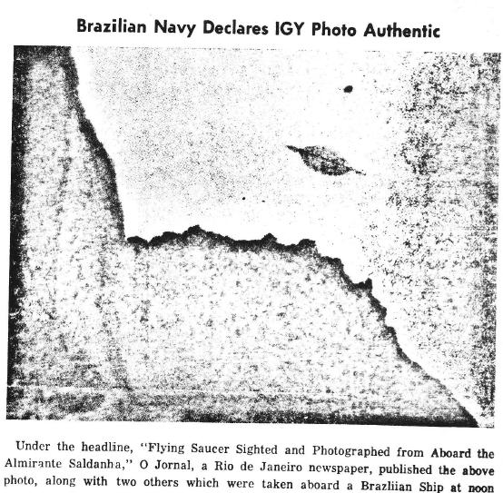 所在地 トリニダーデ島 時間：正午 概要 Almirante saldanha号から空飛ぶ円盤を目撃、撮影」リオデジャネイロの新聞、o Jornalは1958年1月16日の正午にブラジル船で撮影された他の2枚の写真とともに上記の写真を掲載した。 Th. Almirante sardanaは、国際地球物理年プロジェクトでトリンダーデ島近辺に滞在し、その場を離れようとしていたところ、マヌーバを撮影していた遠征隊員のAlmiro Barauna氏がこの物体を見つけ、写真編集した。観測者の何人かは（船上だけでなく、島でも）その物体に怯えた。海戦隊長ジョゼ・ドス・サントス・サルダーニャは、バラウナからフィルムを入手し、数人の将校の提案で、目撃後すぐに船上で数人の立ち会いのもと現像を行った。サルダーニャはリオデジャネイロの海軍本部にこのエピソードを報告し、海軍関係者による慎重な調査の後、調査を開始した」。この調査により、船員やトリンダーデ島の住民が目撃したのは、この物体であることが判明した。 出典 アプロ▼展開
Location: Trinidade Island Time: noon Summary: Flying saucer sighted and photographed from Aboard the Almirante saldanha,” o Jornal, a Rio de Janeiro newspaper, published the above photo, along with two others which were taken aboard a Brazilian ship at mon on 16 January 1958. Th. Almirante sardana, artie patingin International Geophysical Year projects, in the vicinity of Trindade Island, was preparing to leave the area when Mr. Almiro Barauna, a member of the expedition, who was photographing maneuvers, spotted the object and photograph edit . Some of the observers (on the island as well as on the ship) were frightened by the object. Jose dos Santos Saldanha, Captain of Sea and War, obtained the film from Barauna, and at the suggestion of some of the officers, had it developed on the ship shortly after the sighting was made in the presence of several people. Saldanha Reported The episode to Naval Headquarters at Rio de Janeiro, and after careful investigation by Navy officials begun.’ This investigntion ditelornt lhnl llrr,object phokrgraplrobtly Renunr was the snnre object obrervetl by tho ship’s personnel and residents of trindade Island. Source: APRO
資料6: 原文 と DeepL 訳
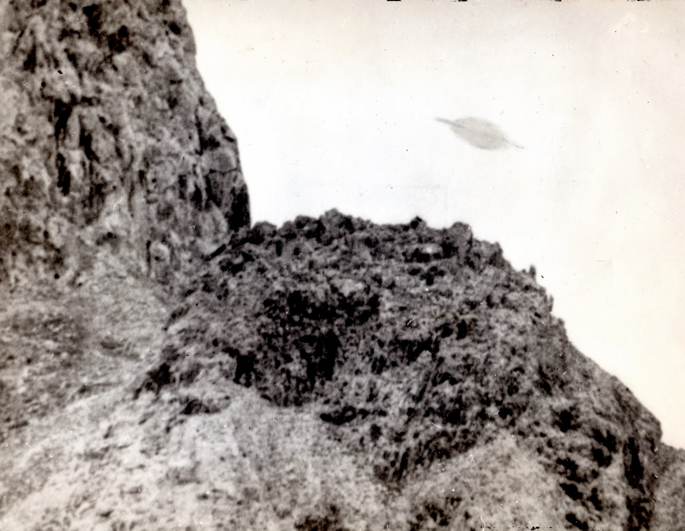 トリンダーデ島シリーズ3枚目、同じ写真家・証言者のアルミロ・バラウナ撮影の写真の拡大図。当社コンサルタントのAndrés Duarteは、この拡大写真は手作業でレタッチされていると指摘しています。▼展開
Close-up of Trindade Island picture #3 made by photographer and witness Almiro Baraúna himself. Consultant Andrés Duarte has detected that this blow-up has been hand-retouched.
資料7: 原文 と DeepL 訳
出典: https://www.thinkaboutitdocs.com/trindade-island-photograph/ブラジルの目撃情報 1958: トリンダーデ島の写真 - Think AboutIts 読了時間：12分 (最終更新日: 2021年2月28日) シンクアバウトイット 目撃情報 日付 1958年1月16日 目撃時刻: 12:15 P.M. 昼／夜 日中 場所 ブラジル、トリンダーデ島 都会か田舎か：島 ハイネックの分類 DD（デイライトディスク） 金属製または白っぽい物体が日中に目撃されました。 継続時間: 物体の数: 単一 物体の大きさ: 物体までの距離: オブジェクトの形状: 円盤 物体の色: 灰色、金属色 目撃者の数: 複数 出典 STUDIOVNI/ Jerome Clark (CUFOS) 要約: ブラジル・バイア沖600マイルの南大西洋の真ん中にある小さな岩の島、トリンダーデは、UFO史上最も印象的な写真事件の現場となった。▼展開
BRAZIL SIGHTINGS 1958: Trindade Island Photograph - Think AboutIts Read time: 12 minutes (Last Updated On: February 28, 2021) THINK ABOUTIT SIGHTINGS REPORT Date: January 16, 1958 Sighting Time: 12:15 P.M. Day/Night: Daytime Location: Trindade Island, Brazil Urban or Rural: Island Hynek Classification: DD (Daylight Disc) Metallic or whitish object was seen in the day. Duration: No. of Object(s): Single Size of Object(s): Distance to Object(s): Shape of Object(s): Disc Color of Object(s): gray, metallic Number of Witnesses: Multiple Source: STUDIOVNI/ Jerome Clark (CUFOS) Summary: Trindade, a small rocky island in the middle of the South Atlantic Ocean 600 miles off the coast of Bahia, Brazil, was the site of one of the most impressive photographic cases in UFO history.フルレポート 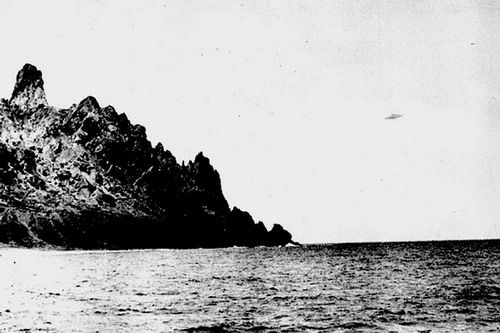 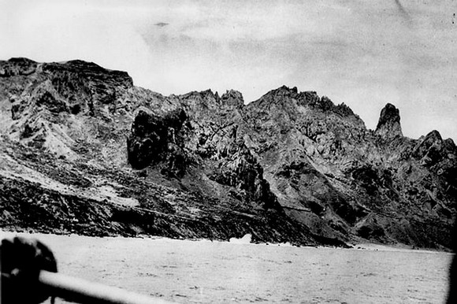 (*: 同じ写真、表示サイズが異なるのみ) ジェリー・クラーク（UFO研究センター）著 ブラジルのバイア沖600マイルの南大西洋の真ん中にある小さな岩だらけの島、トリンダーデは、UFOの歴史の中で最も印象的な写真事件の現場となったところです。 1957年10月、ブラジル海軍はこの無人島に小さな科学基地を設置し、国際地球物理年に関連した海洋学と気象学の研究を行う予定だった。翌月上旬から、観測機器を搭載した気象観測気球が毎日打ち上げられた。この気球は、上空で爆発して観測機器を放出し、パラシュートで地上に降下して研究者に回収される仕組みになっていた。その月の終わりには、気球の動きを監視しているような銀色のUFOが基地から報告されるようになった。▼展開
Full Report trindad02 trindad01 By Jerry Clark (Center for UFO Studies) Trindade, a small rocky island in the middle of the South Atlantic Ocean 600 miles off the coast of Bahia, Brazil, was the site of one of the most impressive photographic cases in UFO history. In October 1957 the Brazilian Navy set up a small scientific base on the unoccupied island, where oceanographic and meteorological research would be conducted in connection with the International Geophysical Year. Starting early the next month, instrument-bearing weather balloons were launched daily. They were designed to explode in the upper atmosphere, releasing the instrument packages which would parachute to earth to be retrieved by the researchers. By the end of the month base personnel were reporting silvery UFOs which seemed to be monitoring the balloons’ movements.1958年1月1日午前7時50分、太陽光を反射する鏡のような明るい光の点の通過が守備隊全員に観察された。翌日の夕方、オレンジ色に光る丸い物体が、トリンダーデから400マイル離れたバイアンの海岸を航行中の海軍の牽引船トリンフォの周りを回りました。乗組員が見ている間、UFOは突然直角に旋回し、また、船の近くでホバリングした。目撃は10分ほど続いた。 最もファンタスティックな出来事は6日に起こった。基地のチーフオフィサー、カルロス・A・バセラーは、上空1万4千メートルにある大きな積乱雲以外は何もない朝の空に、気象観測気球の打ち上げを監督していたところであった。バセラーは無線室の中で、気球が発する信号に耳を傾けていた。ところが突然、その信号が小さくなり、途絶えた。 バセラーは外に出て調べてみたが、特に異常はなかった。気球は普通に上昇していたが、雲の真下に来たとき、突然上に吸い上げられたように見えた。それから10分ほど、気球は雲の中に入ったまま見えなくなった。そして、再び姿を現したときには、雲の上にあり、計器のパッケージはなかった。 やがて雲の向こうから銀色の物体が現れた。セオドライトで見ていた技術者がそれを発見し、司令官に知らせた。司令官はそれを双眼鏡で少し見て、次に六分儀で見た。三日月型で明るい白色をしたその物体は、ある地点で進路を反転し、しばらく視界に留まっていたが、雲堤に入った（Fontes, 1960）。▼展開
On January 1,1958, at 7:50 A.M., the passage of a bright point of light, like a mirror reflecting sunlight, was observed by the entire garrison. The next evening a round object with an orange glow circled the Navy tow ship Triunfo traveling off the Bahian coast 400 miles from Trindade. As the crew watched, the UFO executed sudden right-angle turns and at other times hovered near the ship. The sighting lasted for 10 minutes. The most fantastic event occurred on the sixth. The base’s chief officer, Cmdr. Carlos A. Bacellar, had just overseen the launching of a weather balloon into a morning sky clear of everything but a single large cumulus cloud at 14,000 feet. Inside the radio cabin Bacellar listened to the signals the balloon emitted as it ascended. Suddenly those signals inexplicably diminished, then went dead. When Bacellar went outside to investigate, he saw nothing out of the ordinary, at least at first. The balloon was ascending normally—until it came directly below the cloud, at which point it seemed to be sucked abruptly upward. For the next 10 minutes it remained out of sight and inside the cloud. Finally, when it reappeared, it was above the cloud and devoid of the instrument package. Soon a silvery object emerged from behind the cloud. As it moved slowly from the southwest to the east, a technician gazing through a theodolite spotted it and alerted the commander, who viewed it briefly through binoculars, then through a sextant. Crescent-shaped and bright white in color, the object reversed course at one point and remained in sight for some time before it entered a cloud bank (Fontes, 1960).写真 その後[16JAN58]、午後12時15分、トリンダーデの南海岸に停泊し、リオデジャネイロに戻る準備をしていたアルミランテ・サルダンハ号は、48人の乗組員と乗客が島に接近する物体を発見しました。目撃者の中には、水中写真の腕を買われて連れてこられた民間人のアルミロ・バラウナもいた。バラウナは、雑誌『0 Cruzeiro』のジョアン・マルティンスに次のように語っている。 私はローライフレックス2.8-モデルEを持っていましたが、水と塩の腐食から守るためにアルミの箱に入れていました。望遠レンズを装着したライカは、数分前にキャビンに置いてきてしまったのだ。甲板は船員や士官でいっぱいだった。突然、アミラール・ヴィエイラ氏と（元空軍）ヴィエガス少佐が私を呼び、空のある場所を指差して、島に近づいている明るい物体について大声で叫んだ。 その時、船首から歯科医のホメーロ・リベイロ中尉が走ってきて、空を指差しながら、自分が見た物体について叫びました。彼は興奮のあまり、ケーブルにぶつかって倒れそうになった。そして、その物体が放つ閃光で、ようやくその位置を確認することができた。それはすでに島の近くまで来ていた。▼展開
The photographs Later [16JAN58], at 12:15 P.M., as the Almirante Saldanha sat anchored off the south coast of Trindade and prepared for a return trip to Rio de Janeiro, 48 crew members and passengers spotted an object approaching the island. Among the witnesses was Almiro Barauna, a civilian who had been brought along because of his skill in underwater photography. Barauna gave this account to João Martins of the magazine 0 Cruzeiro: I had my Rolleiflex 2.8-model E, which was kept inside an aluminum box for protection against the corrosive effects of water and salt. I had left my Leica with a telephoto lens in my cabin a few minutes before. The deck was full of sailors and officers. Suddenly Mr. Amilar Vieira and [retired Air Force] Capt. [José Teobaldo] Viegas called to me, pointing to a certain spot in the sky and yelling about a bright object which was approaching the island. At this same moment, when I was still trying to see what it was, Lt. Homero [Ribeiro] — the ship’s dentist—came from the bow toward us, running, pointing to the sky and also yelling about an object he was sighting. He was so disturbed and excited that he almost fell down after colliding with a cable. Then I was finally able to locate the object, by the flash it emitted. It was already close to the island.太陽の光を反射しているのか、それとも自ら光を変化させているのか、ある瞬間にキラキラと輝いた。それは海を越え、ガロ・クレストと呼ばれる地点に向かって移動してきた。30秒ほど探し回ったが、雲をバックにしたシルエットがはっきり見えたときには、すでにカメラを手にして構えていた。デセハド峰の後ろに消える前に2枚の写真を撮った。スピード125、絞りF8で撮影したのが露出オーバーの原因であった。 その物体は数秒間、山頂の後ろに隠れていたが、再び大きくなって反対方向に飛んできた。3枚目の写真を撮った。4枚目と5枚目は、円盤の移動速度のためだけでなく、別の理由もあった。目撃の結果生じた混乱の中で、私はその物体を見つけようとする他の人々に引っ張られたり押されたりし、結果として、物体ではなく海と島だけを撮影した。そして、その物体は再び元の方向である海に向かって移動し、一瞬空中で止まったように見えた。その瞬間、私は最後の写真を撮った（フィルム上の最後の写真）。約10秒後、物体は船からの距離を延ばし続け、徐々に小さくなり、最後は水平線に消えていった［ibid.］▼展開
It glittered at certain moments, perhaps reflecting the sunlight, perhaps changing its own light — I don’t know. It was coming over the sea, moving toward the point called the Galo Crest. I had lost 30 seconds looking for the object, but the camera was already in my hands, ready, when I sighted it clearly silhouetted against the clouds. I shot two photos before it disappeared behind Desejado Peak. My camera was set at speed 125, with the aperture at f/8, and this was the cause of an overexposure error, as I discovered later. The object remained out of sight for a few seconds— behind the peak— reappearing bigger in size and flying in the opposite direction, but lower and closer than before, and moving at a higher speed. I shot the third photo. The fourth and fifth ones were lost, not only because of the speed the saucer was moving, but also for another reason: in the confusion produced as a result of the sighting, I was being pulled and pushed by other persons also trying to spot the object and, as a consequence, photographed the sea and the island only—not the object. It was moving again toward the sea, in the direction from which it had come, and it appeared to stop in mid-air for a brief time. At that moment I shot my last photo (the last on the film). After about 10 seconds, the object continued to increase its distance from the ship, gradually diminishing in size and finally disappearing into the horizon [ibid.].その物体は、緑色の霞か霧に包まれてはいたが、灰色で金属的で頑丈そうなものであった。真ん中に輪があり、土星を平たくしたような形をしている。 この体験にひどく動揺したバラウナは、すぐにフィルムを取り出したが、処理するのに1時間もかかった。ビエガス少佐と一緒に暗室に入り、バセラ少佐（目撃時に甲板にいなかった）はドアの外で待っていた。10分後、バラウナは濡れたネガ（印画紙がなかった）をバセラに見せて、UFOの映像が拾われていないように見えると言った。司令官はネガを注意深く調べ、その像を発見した。その後、他の目撃者も写真に写っているのが自分たちが観察した物体であると述べた(「New Evidence」1965年)。 余波 バラウナはネガをリオに持ち帰り、自分の実験室でネガを処理した。その後、バセラは現像した写真を見るためにバラウナの家に来て、海軍省に持ち込んだ。2日後、バセラーは写真を返しに来たが、その後すぐにバラウナは海軍本部に呼び出され、高級将校に尋問された。海軍省はネガをクルゼイロ・ド・スル航空写真測量局（Cruzeiro do Sul Aero Photogrammetry Service）に送り、分析を依頼した。そして、そのネガが本物であることが確認された。ブラジル大統領のクビチェク（Juscelino Kubitschek）は、すぐにネガをマスコミに公開するよう命じた。▼展開
The object was gray, metallic, and solid-looking, though surrounded by a greenish haze or mist. With a ring running through its midsection, it resembled a flattened version of the planet Saturn. Badly shaken by the experience, Barauna removed the film from the camera almost immediately but delayed processing it for an hour. Finally he and Capt. Viegas entered the ship’s darkroom together, while Cmdr. Bacellar (who had not been on deck when the sighting occurred) waited outside the door. Ten minutes later Barauna showed the wet negatives to Bacellar (there was no photographic paper available) and said that it looked as if the UFO’s image had not been picked up. The commander examined the negatives carefully and spotted the image. Subsequently, the other witnesses stated that the object in the photographs was the one they observed (“New Evidence,” 1965). Aftermath Barauna took the negatives with him to Rio and processed them in his own laboratory. Shortly afterwards Bacellar showed up at Barauna’s home to look at the developed photographs, which he then took to the Navy Ministry. Two days later he returned them, and shortly thereafter Barauna was summoned to naval headquarters, where high-ranking officers grilled him. The Ministry sent his negatives to the Cruzeiro do Sul Aero Photogrammetry Service for analysis. They were declared genuine. In short order Brazil’s President, Juscelino Kubitschek, ordered them released to the press.その後、目撃者の何人かが新聞社のインタビューに答えた。20日、ブラジル海軍の水路ナビゲーションサービスのパウロ・モレイラ・ダ・シルバ中佐は、「物体は気象観測用気球ではなく、我々がその日打ち上げたものは、物体が空に現れる2時間前の午前9時に放たれた......」と述べた。また、トリンダーデ島はロケットの飛来地ではないので、アメリカからの誘導ミサイルでもない。 リオの医師で、ツーソンの航空現象研究機構（A.P.R.O.）を代表するオラヴォ・T・フォンテスは、2月4日に海軍の情報提供者からこの事件を知らされた。14日夜、海軍省で5枚の写真を見せられた。彼はその時、5枚目が最初の4枚（バラウナの写真）よりも早く撮影されたことを知らなかったので、今日までこの写真についてはほとんど何も分かっていない。フォンテスは、この写真が12月下旬に島のデセジャド峰で海軍の軍曹によって撮影されたと考えていた（Lorenzen, 1962）。 海軍関係者は後に、バラウナが写真を撮る前日、アルミランテ・サルダーニャのレーダーが未知の物体を追跡していたことをフォンテスに語った。16日午前2時30分、バラウナの目撃の10時間も前に、リオの病院の外科部長エツィオ・アゼベド・フンダオとその家族は、ブラジル沖、トリンダーデの方向で土星型のUFOを目撃している。ほぼ同じ時刻に、海軍の曳航船トリデンテの甲板からも、同一または類似の物体が観測された。▼展開
In the days ahead some of the witnesses gave interviews to newspapers. On the twenty-second Cmdr. Paulo Moreira da Silva of the Brazilian Navy’s Hydrography and Navigation Service stated that the “object was not a meteorological balloon, for the one we had launched that day was released at 9 A.M., two [sic] hours before the appearance of the object in the sky… . Also it was not a guided missile from the United States because the island of Trindade is off the route of those rockets.” Olavo T. Fontes, a well-connected Rio physician who represented the Tucson-based Aerial Phenomena Research Organization (A.P.R.O.), learned of the incident from naval informants on February 4. On the evening of the fourteenth, at the Navy Ministry, he was shown five photographs. He did not know then that the fifth had been taken earlier than the first four (Barauna’s photographs), and to this day little is known about this picture. Fontes believed it was taken by a Navy sergeant in late December at Desejado Peak on the island (Lorenzen, 1962). A naval source later told Fontes that the day before Barauna took his pictures, the Almirante Saldanha’s radar had tracked an unknown object. At 2:30 A.M. on the sixteenth, less than 10 hours before the Barauna sighting, Ezio Azevedo Fundao, chief of surgery at a Rio hospital, and members of his family saw a Saturn-shaped UFO off the coast of Brazil, in the direction of Trindade. At approximately the same time the same or an identical object was observed from the deck of the Tridente, a Navy tow ship.2月23日、『ディアリオ・カリオカ』の記者パウロ・M・カンポスは、「空飛ぶ円盤の目撃そのものよりも、海軍に深い印象を与えたのは、飛行物体が島の近くにいる間、無線発信機や磁気針などの機器が作動しなくなったという報告である」と、名前はないが「最善の」情報源を挙げて記している。海軍はこれを 海軍はこれを極秘の事実とすることにした」。しかし、フォンテスさんは、この事実を肯定も否定もしなかった。(1983年のインタビューで、バラウナはUFO出現の直前に船内のすべての電気が故障したと回想している[Smith, 1983])。 ブラジル下院が海軍に更なる情報を要求した後、公式調査に関する秘密報告書が渡された。この文書は1964年10月にAPROのコーラル・ロレンゼン所長にリークされた。様々な目撃情報と1月16日の写真を検討した後、その著者であるコルベットのホセ・ジェラルド・ブランダオ大佐は、「個人の報告と写真の証拠の存在は、関係する状況（改ざんの証拠がないこと、他の目撃者がいること）を考慮して一定の価値があり、未確認飛行物体の存在を示すものがあることを認める」と結論づけたのです。彼はまた、「写真家、民間人、船の乗組員を含む、物体を目撃したすべての人の......強い感情の動揺」を指摘した（「新しい証拠」op. c. ）。▼展開
On February 23 Paulo M. Campos, a reporter for Diario Carioca, citing an unnamed but “best possible” source, wrote that “more than the sighting of the flying saucer itself, what really made a deep impression on the Navy was the report that instruments like radio transmitters, and apparatus with magnetic needles, ceased operating while the flying object remained in the island’s proximity. The Navy decided to consider this a top-secret fact.” When he checked with his own sources, Fontes could get neither confirmation nor denial of this alleged aspect of the event. (In a 1983 interview Barauna recalled that just prior to the UFO’s appearance all of the electrical power on the ship had failed [Smith, 1983].) After Brazil’s House of Representatives demanded further information from the Navy, it was given a secret report on the official investigation. The document was leaked in October 1964 to Coral Lorenzen, director of APRO. After reviewing the various sightings and the January 16 photographs, its author, Corvette-Capt. Jose Geraldo Brandao, concluded that the “existence of personal reports and of photographic evidence, of certain value considering the circumstance involved [absence of evidence of tampering, the presence of other witnesses], permit the admission that there are indications of the existence of unidentified aerial objects.” He also noted the “strong emotional upset . . . in all persons who sighted the object, including the photographer, civilians, and members of the ship’s crew” (“New Evidence,” op. cit.).デマか？ 1959年11月27日、ハーバード大学の天文学者でありUFO論議家でもあるドナルド・H・メンゼルは、トリンダーデ写真の物体に関する彼の「暫定的な結論」を報告するために、航空現象に関する国家調査委員会のリチャード・ホールに手紙を書きました。 私は、この特別な例において、その性質が知られており、明確に区別できる、衛星のような物体の十分に認証された1つのケースを持っている。湿度の高い、しかし明らかに過冷却の大気の中を飛ぶ飛行機は、完全に霧に包まれ、翼の上と下にそれぞれ流線が流れている部分が見えるだけであった。機体は中央にサターンのような点を作り、翼はブラジルの写真とよく似ている。 メンゼルは、トリンダーデの速度と機敏な動きは、太陽光が機体に反射して生じた錯覚であるとして、これを説明した。 しかし、4年後、メンゼルは『空飛ぶ円盤の世界』の中で、この事件はデマだと公言し、バラウナが同僚と共謀して二重露光で写真を偽造したと告発した（Menzel and Boyd, 1963）。彼は、それに反する新聞記事や公式報告には触れずに、「トリンダーデの円盤を観察したとされ、バラウナの話を裏付けることができる士官や乗組員にインタビューする機会があったとき...彼らのうち誰も実際にその物体を見たことがない」と書いている。実際、1959年にホールはメンゼルに1958年3月8日のオ・クルゼイロ紙の記事の翻訳を提供しており、そこには何人かの目撃者の名前が記されている（ホール、1959年）。▼展開
A hoax? On November 27, 1959, Donald H. Menzel, a Harvard University astronomer and UFO debunker, wrote Richard Hall of the National Investigations Committee on Aerial Phenomena to report his “tentative conclusion” concerning the object in the Trindade photograph: I have in my possession one well-authenticated case of a saturn-like object, whose nature is known and clearly distinguishable in this particular instance. A plane, flying in a humid but apparently super-cooled atmosphere, became completely enveloped in fog, so about all one could see was a division where the stream lines were flowing up and down respectively over and under the wings. The cabin made a saturn-like spot in the center, and the wings closely resembled the appearance of the Brazilian photographs. The Trindade object’s speed and sprightly maneuvers were explainable, Menzel claimed, as an illusion created by the reflection of sunlight on the plane. But four years later, in The World of Flying Saucers, Menzel publicly declared the case a hoax, charging that Barauna had faked the photographs via double exposure in collusion with an associate (Menzel and Boyd, 1963). He wrote, without mentioning newspaper articles and official reports to the contrary, that when reporters had a “chance to interview the officers and crewmen who allegedly had observed the Trindade saucer and could support Barauna’s story… [n]one of them had actually seen the object.” In fact, in 1959 Hall had provided Menzel with a translation of a March 8, 1958, O Cruzeiro article which names several of the witnesses (Hall, 1959).メンゼルはブラジル海軍のプレスリリースを転載しているが、原文とメンゼル版を比較すると、いくつかの重大な相違が明らかになる。後者では、3つの単語が追加され、6つの単語が省かれている。 原文はこうである。"明らかに、本省はトリンダーデ島上空で目撃された物体についていかなる声明も発表できない。" "写真はそのような目的のための十分な証拠とはならないからだ。メンツェルはこう表現している。"明らかに、本省はその物体の実態についていかなる陳述もできない。" "写真はそのような目的のための十分な証拠とはならないからである。" 最初の声明は、物体と目撃を認めているのに対し、2番目の声明は、その実態が疑問視されていることを暗に示している-ブラジル海軍の意図とは思えない。 メンゼルの攻撃は次の著書『UFOエニグマ』でも続けられ、彼は出典を示さないまま、写真の偽造に使われたとする「極めて単純な」方法を概説している。「メンゼルは、「写真家は、自分の家で、黒い背景にUFOの模型を何枚も撮影した」と書いている。そして、同じフィルムをカメラに装填し、普通に風景を撮った。現像すると、空には円盤がぶら下がっていたのです」。メンゼルは、この話を全くの出鱈目で編み出したようである。彼はまた、「友人（と推定される共犯者）以外、誰も頭上を飛ぶ円盤を見たことがない」という根拠のない主張も繰り返している（Menzel and Taves, 1977）。▼展開
Menzel reprints a Brazilian Navy press release, but when the original and Menzel’s version are compared, some significant discrepancies become apparent. In the latter three words are added and six left out. The original reads: “Evidently, this Ministry cannot make any statement about the object sighted over the island of Trindade, for the photographs do not constitute enough evidence for such a purpose.” Menzel renders it thus: “Clearly, this Ministry cannot make any statement about the reality of the object, for the photos do not constitute enough evidence for such a purpose.” Whereas the first statement acknowledges an object and a sighting, the second implies that their reality is open to question — hardly the Brazilian Navy’s intention. Menzel’s attack continues in his next book, The UFO Enigma, wherein — though citing no source — he outlines the “extremely simple” method that he claimed was used to fake the photographs. “In the privacy of his home,” Menzel writes, “the photographer had snapped a series of pictures of a model UFO against a black background. He then reloaded the camera with the same film and took pictures of the scenery in the ordinary fashion. When the film was developed, there was the saucer hanging in the sky.” Menzel seems to have woven this story out of whole cloth. He also repeats the unfounded allegation that “no one else, except a friend (and presumed accomplice), had seen the disk flying overhead” (Menzel and Taves, 1977).事件発生時に関心を示していた米海軍（Fontes, op.cit.）は公式コメントを拒否したが、米空軍のプロジェクト・ブルーブックのカール・R・ハート少佐は1963年の書簡で、海軍情報局の報告書を引用してこう述べている。「この紳士（バラウナ）は写真のトリックショットに長い歴史を持っている。. . [彼は、トリック写真を使った『空飛ぶ円盤が自宅で私を狩る』と題する意図的にユーモラスな記事を用意し、雑誌に発表した」（Hart, 1963）。この記事は、1952年に公表されたブラジルの空飛ぶ円盤の写真がどのように作られたかを示すことを意図した否定的な記事であったことに注意すべきである（Smith, op.cit.)。 1978年、アリゾナ州にあるUFO写真の分析を専門とするグループ、グラウンド・ソーサー・ウォッチ（GSW）は、良質のプリントにコンピューター処理を施し、エッジ強調、色調補正、画素の歪み、デジタル化などに重点を置いていた。その結果、次のような結論に達した。▼展開
Though the U.S. Navy, which had expressed interest in the case at the time of its occurrence (Fontes, op. cit.), refused public comment, in a 1963 letter Maj. Carl R. Hart of the U.S. Air Force’s Project Blue Book quoted from an Office of Naval Intelligence report: “This gentleman [Barauna] has a long history of photographic trick shots. . . . [He prepared a purposely humorous article, published in a magazine, entitled ‘A Flying Saucer Hunted Me at Home’, using trick photography” (Hart, 1963). It should be noted that the article was a debunking piece intended to show how a much-publicized 1952 Brazilian flying-saucer photograph was created (Smith, op. cit.). In 1978 an Arizona-based group, Ground Saucer Watch (GSW), which specialized in analysis of purported UFO photographs (and which had rejected most as phony), subjected good-quality prints to a computer-processing technique, focusing on edge enhancement, color-contouring, picture-cell distortion, and digitizing. GSW’s specialists came to these conclusions:UFO画像は、直径50フィート以上ある。いずれの場合も、UFOの画像は、撮影者/カメラからの距離が広大であることを明らかにしている。写真には、デマ（手で投げられたり、吊り下げられた模型など）の形跡がありません。UFOの画像は光を反射しており、実体のある画像に関するすべてのコンピュータ・テストに合格している。この画像は、既知の航空機や実験用気球の種類を表していない。デジタル濃度測定では、金属的な反射が確認された。我々は、ブラジルの写真は本物であり、起源が不明な特別な飛行物体を表しているという一致した意見を持っている[Hewes, 1979]。 目撃者の数、軍と民間の写真分析の結果（Hopf, 1960）、デバンカーが事件を「説明」するために再発明する必要性を考えると、トリンダーデの写真がデッチ上げである可能性は最も低いと思われる。▼展開
The UFO image is over 50 feet in diameter. The UFO image in each case reveals a vast distance from the photographer/camera. The photographs show no signs of hoax (i.e., a hand-thrown or suspended model). The UFO image is reflecting light and passed all computer tests for an image with substance. The image represents no known type of aircraft or experimental balloon. Digital densitometry reveals a metallic reflection. We are of the unanimous opinion that the Brazilian photos are authentic and represent an extraordinary flying object of unknown origin [Hewes, 1979]. Given the number of witnesses, the results of photo analysis both military and civilian (Hopf, 1960), and the need for debunkers to reinvent the incident to “explain” it, it seems most unlikely that the Trindade photographs were hoaxed.出典 Fontes, Olavo T. "The UAO Sightings at the Island of Trindade.". The A.P.R.O. Bulletin Pt. I (January 1960): 5-9; Pt.II (1960年3月): 5-8; Pt.III (1960年5月): 4-8. Hall, Richard H. Letter to Donald H. Menzel (November 2,1959). ホール、リチャード・H.、編 UFOの証拠。ワシントンDC: 航空現象に関する国家調査委員会, 1964. Hart, Carl R. Letter to Richard H. Hall (January 24, 1963)（ハート、カール・R、リチャード・H・ホールへの手紙）。 Hewes, Hayden. "トリンダーデ島上空の謎の円盤". UFOレポート 7,1 (1979年2月): 18-19,58. Hopf, John T. "Exclusive IGY Photo Analysis". The A.P.R.0. Bulletin (1960年5月): 1,4. "IGY Team Snaps UFO"（IGYチームがUFOを撮影）。A.P.R.O. Bulletin (1958年3月): 1,6. ローレンゼン、コーラルE. The Great Flying Saucer Hoax: UFOの事実とその解釈. New York: William-Frederick Press, 1962. 空飛ぶ円盤(Flying Saucers)」として改訂された。The Startling Evidence of the Invasion from Outer Space（宇宙からの侵略の驚くべき証拠）。ニューヨーク。New American Library, 1966. "トリンダーデUFOに関するブラジル公式報告書". Fate 18,3 (1965年3月): 38-48. Menzel, Donald H. Letter to Richard H. Hall (November 27, 1959). メンゼル、ドナルド・H.とライル・G・ボイド(Menzel, Donald H. and Lyle G. Boyd). The World of Flying Saucers:A Scientific Examination of a Major Myth of the Space Age.Garden City, NY: Doubleday and Company, 1963. メンゼル、ドナルド・H.とアーネスト・H・テーブス. UFOのエニグマ：UFO現象の決定的な説明。Garden City, NY: Doubleday and Company, 1977. "IGY写真に関する新しい証拠". The A.P.R..0. Bulletin（1965年1月号）: 1,3-8. Smith, Willy. "トリンダーデ再訪" インターナショナルUFOリポーター8,4（1983年7月/8月）。3-5,14. "UFOs in Latin America." ヒラリー・エヴァンス、ジョン・スペンサー編。UFOs 1947-1987: The 40-Year Search for an Explanation, 97-113. London: Fortean Tomes, 1987. "ブラジル海軍が認定したUFO写真に米空軍がデマとレッテルを貼る". The UF0 Investigator 1,10 (July/August 1960): 3. * 著者の許可を得ています。クラーク、J. "トリンダーデ島の写真". UFOエンサイクロペディア。The phenomenon from the beginning (2nd ed., Vol. 2, pp. 898-903). Detroit, MI: Omnigraphics, Inc. 1998▼展開
Sources: Fontes, Olavo T. “The UAO Sightings at the Island of Trindade.” The A.P.R.O. Bulletin Pt. I (January 1960): 5-9; Pt. II (March 1960): 5-8; Pt. III (May 1960): 4-8. Hall, Richard H. Letter to Donald H. Menzel (November 2,1959). Hall, Richard H., ed. The UFO Evidence. Washington, DC: National Investigations Committee on Aerial Phenomena, 1964. Hart, Carl R. Letter to Richard H. Hall (January 24, 1963). Hewes, Hayden. “The Mystery Disk over Trindade Island.” UFO Report 7,1 (February 1979): 18-19,58. Hopf, John T. “Exclusive IGY Photo Analysis.” The A.P.R.0. Bulletin (May 1960): 1,4. “IGY Team Snaps UFO.” The A.P.R.O. Bulletin (March 1958): 1,6. Lorenzen, Coral E. The Great Flying Saucer Hoax: The UFO Facts and Their Interpretation. New York: William-Frederick Press, 1962. Revised edition as Flying Saucers: The Startling Evidence of the Invasion from Outer Space. New York: New American Library, 1966. “Brazilian Official Report on the Trindade UFO.” Fate 18,3 (March 1965): 38-48. Menzel, Donald H. Letter to Richard H. Hall (November 27, 1959). Menzel, Donald H., and Lyle G. Boyd. The World of Flying Saucers:A Scientific Examination of a Major Myth of the Space Age.Garden City, NY: Doubleday and Company, 1963. Menzel, Donald H., and Ernest H. Taves. The UFO Enigma: The Definitive Explanation of the UFO Phenomenon. Garden City, NY: Doubleday and Company, 1977. “New Evidence on IGY Photos.” The A.P.R..0. Bulletin (January 1965): 1,3-8. Smith, Willy. “Trindade Revisited.” International UFO Reporter 8,4 (July/August 1983): 3-5,14. “UFOs in Latin America.” In Hilary Evans with John Spencer, eds. UFOs 1947-1987: The 40-Year Search for an Explanation, 97-113. London: Fortean Tomes, 1987. “UFO Photo Certified by Brazilian Navy Labeled a Hoax by USAF.” The UF0 Investigator 1,10 (July/August 1960): 3. * By permission of the author. Clark, J. “Trindade Island Photographs.” The UFO Encyclopedia: The phenomenon from the beginning (2nd ed., Vol. 2, pp. 898-903). Detroit, MI: Omnigraphics, Inc. 1998
資料8: 原文 と DeepL 訳
出典: https://www.openminds.tv/trindade-ufo-case-205/5060トリンダーデUFO事件に関する貴重な資料 - Openminds.tv Antonio Huneeus - 読了時間：8分 国際UFO会議 これらのUFO写真は、その品質だけでなく、その背景からも、UFO学の歴史の中で最もよく知られているものの1つです... トリンダーデUFO事件に関する貴重な資料 投稿者 Antonio Huneeus 8月26日, 2010 6 コメント 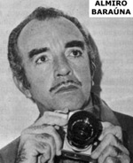 Almiro Baraúna▼展開
Rare document on the Trindade UFO case - Openminds.tv Antonio Huneeus — Read time: 8 minutes The International UFO Congress These UFO photos are among the best known ever in the history of ufology, not just because of their quality but also due to their background... Rare document on the Trindade UFO case Posted by: Antonio Huneeus August 26, 2010 6 Commentsここ数日、UFOフォーラムでは、ブラジルのプロの写真家、故アルミロ・バラウナ氏が1958年1月16日にトリンダーデ島の海岸でブラジル海軍の船「アルミランテ・サルダーニャ」に乗って撮影した有名な一連の飛行円盤の写真について、デマの「自白」があったとする議論がかなり行われています。これらのUFO写真は、その品質だけでなく、海軍の船で撮影されたこと、多くの乗組員がその物体を目撃したこと、ブラジル海軍によって公式に調査されたことなどの背景から、UFO学の歴史において最もよく知られた写真の1つとなっています。そして、ブラジル大統領ジュセリーノ・クビチェクがリオデジャネイロ（当時首都）の新聞社「コレイオ・ダ・マンハ」の記者に写真のコピーを渡し、1958年2月21日の一面に掲載されたことで事件が知られたことだ（クリップ参照）。この事件と写真は、それ以来、何百ものUFO記事、書籍、テレビ番組で取り上げられ、有名になった。 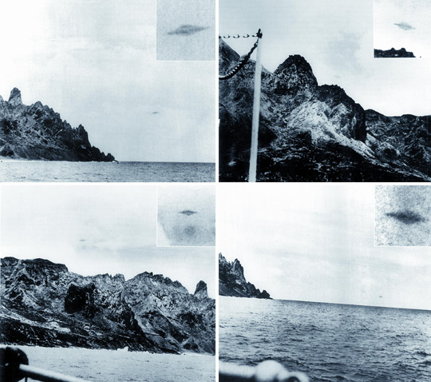 Baraúna's UFO photos under dispute. バラウナのUFO写真に異議あり 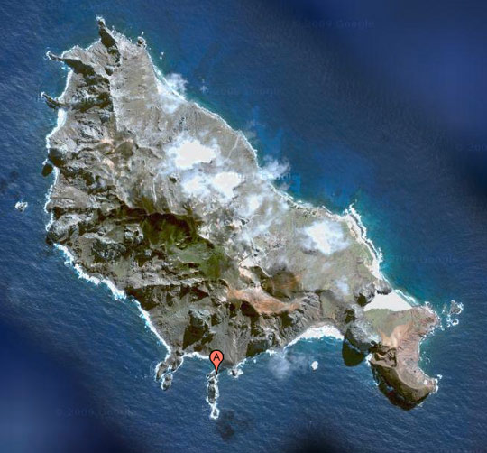 Trinidade Island indicating location of ship. (image credit: google) 船の位置を示すトリニダーデ島。(画像提供: google) 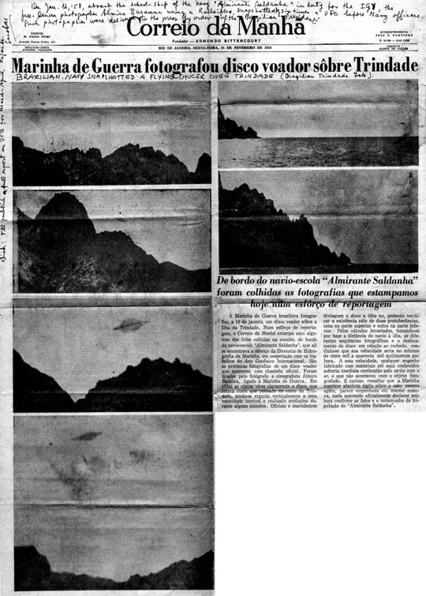 Correio da Manha, the first newspaper to publish to photos. Correio da Manha、写真に掲載した最初の新聞。▼展開
During the last few days there has been quite a bit of discussion in the UFO forums about the alleged hoax “confession” by the late Brazilian professional photographer, Almiro Baraúna, regarding the famous photographic sequence of a flying disc he took onboard the Brazilian Navy ship “Almirante Saldanha” on the coast of Trindade Island in January 16, 1958. These UFO photos are among the best known ever in the history of ufology, not just because of their quality but also due to their background, such as the fact that were taken in a navy ship; that the object was seen by many of the crewmen; that the case was officially investigated by the Brazilian Navy; and last but not least, that the case became known when Brazil’s President, Juscelino Kubitschek, gave copies of the photos to a reporter from the Rio de Janeiro (the nation’s capital back then) newspaper Correio da Manha (Morning Courier), where they were published on the front page on February 21, 1958 (see clip). The case and photos became a cause célèbre ever since, appearing in hundreds of UFO articles, books and TV programs.2000年に他界したバラウナ氏のセカンドハンド告白とされる内容は、今月初め、グローボTVネットワークが放送するプライムタイムの人気テレビ番組「ファンタスティコ」に登場したものである。この番組では、トリンダーデの写真だけでなく、ブラジルの有名なUFO事例を否定するような、かなり否定的な内容であった。バラウナについてのセクションは非常に短く、具体的な情報はほとんどなかった。バラウナの友人で広告代理店のキャリアウーマンであるエミリア・ビッテンコート（Emília Bittencourt）は、次のように言っている。「彼（バラウナ）は、2つのクッキングテーブルをつなぎ合わせ、自宅の冷蔵庫を背景にして宇宙船を作りました。冷蔵庫の扉に映し出したオブジェを、完璧な照明で撮影したのです。と言って笑った。そしてテレビ番組は、"バラウナのコレクションは彼の姪と一緒にあり、彼女は（カメラでの）撮影を拒否したが、詐欺を確認した。"と付け加えました。 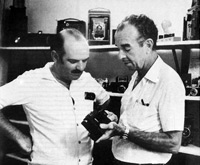 Almiro Baraúna (right) with a friend. Almiro Baraúna氏（右）と友人。▼展開
The alleged second-hand confession of Baraúna, who passed away in 2000, appeared on the highly popular prime time television program Fantástico, broadcast by the Globo TV network earlier this month. While Fantástico has produced many UFO segments in the past, most of which were positive towards the field, this particular one was quite negative, as they debunked not just the Trindade photos but many famous Brazilian UFO cases. The section on Baraúna was very short and contained very little specific information. It basically consisted on a sound byte by a friend of Baraúna, an ad agency career woman called Emília Bittencourt, who said the following: “He [Baraúna] took two cooking tablespoons, joined them and made a spaceship, using his home refrigerator as the backdrop. He photographed the object on the refrigerator door with the perfect lighting. He laughed about it.” The TV program then added that, “the collection of Baraúna is with his niece, who declined to be recorded [on camera], but confirmed the fraud.”Emília BittencourtがFantásticoで語ったセカンドハンドの「告白」はその程度である。どう考えても、バラウナは高い技術を持った写真家であり、質の良いデマのUFO写真を作ることができたはずだが、彼女の発言には2つの問題がある。1つは、2つのスプーンがトリンダーデの写真に写っている土星型の物体に見えるかどうかということで、この件を長年研究している光学物理学者のブルース・マッカビー博士が指摘していることである。もう一つは、"自宅の冷蔵庫を背景にした "という言及だ。バラウナは自宅ではなく、海軍の船 "アルミランテ・サルダンハ "にいたのだから、"自宅の冷蔵庫 "を使うわけにはいかない。コックや水兵がいる船内の厨房の冷蔵庫を使ったのだろうが、その可能性は極めて低い。それは、1954年にブラジルの雑誌『Mundo Ilustrado』に掲載されたUFO写真をバラウナがデッチ上げ、そのために老人が友人と姪に話したことが混同された可能性があるというものである。 Mundo Ilustradoのクリップは下記で見ることができる。タイトルとサブタイトルの訳は次の通りである。"A FLYING SAUCER WAS IN MY HOUSE... How can you make a Martian spacecraft, or what is the truth and untruth of the saucers."（空飛ぶ円盤が家にあった）。写真のトリックは、探検と楽しみのために使うことができます。" 文章を書いたのはヴィニシウス・リマ、写真を作ったのは他でもないアルミロ・バラウナです。実際、写真には女性が2つの何かを接合している様子が写っている（文字が非常に小さいのでキャプションは読めない）。この1954年の記事について最後に述べておくと、これは前もって宣言されたトリックであって、UFOの写真を本物だと偽っているデマではない、ということだ。 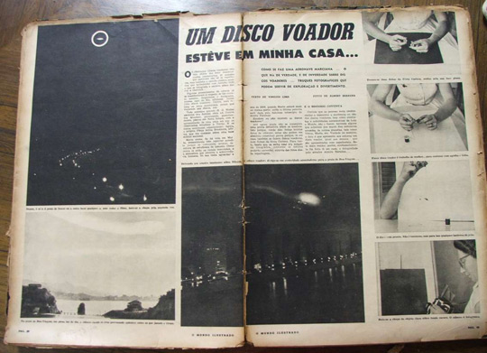 Mundo Ilustrado, 1954 ムンド・イルストラド、1954年▼展開
That is the extent of the second-hand “confession” as told by Emília Bittencourt on Fantástico. By all accounts, Baraúna was a highly skilled photographer who could have created a good quality hoaxed UFO photo, but there are a couple of problems with her statement. One is whether two spoons would look like the Saturn-shaped object in the Trindade photos, a point raised by optical physicist Dr. Bruce Maccabee, who has long studied this case. The other is the reference to “his home refrigerator as a backdrop.” Baraúna could have not used his “home refrigerator” for the simple reason that he was not home but in the Navy ship “Almirante Saldanha.” He would have had to use the ship’s kitchen refrigerator in view of the cook and a bunch of sailors and this is extremely unlikely. Instead, there is a probable explanation for this alleged “confession” that was also mentioned by Maccabee, which is that Baraúna did indeed hoax some UFO photos that were published in the Brazilian magazine Mundo Ilustrado (Illustrated World) in 1954, and which could have led to a confusion about what the old man told his friend and his niece. You can see the Mundo Ilustrado clip below. The translation of the title and subtitle is the following: “A FLYING SAUCER WAS IN MY HOUSE… How can you make a Martian spacecraft, or what is the truth and untruth of the saucers. Photographic tricks can be used for exploration and fun.” The text was written by Vinicius Lima and the photos were made by none other than Almiro Baraúna. In fact, in the photos you can see how a woman is joining two pieces of something (I am unable to read the caption as the text is very small). A final point about this 1954 article is worth mentioning, and that is that this was an upfront, declared trick, not a hoax in which you are pretending that the UFO photo is real.ブラジルの懐疑論者、森健太郎は、1997年に研究者のマルコ・アントニオ・プティが行った、バラウナ本人が死のわずか3年前に行った別のインタビューを指摘した。森が投稿した見出しは、"アルミロ・バラウナが語るトリックの詳細 "とある。しかし、YouTubeでその映像を見たところ、バラウナがトリンダーデの写真をデッチ上げたという具体的な言及は見つからなかった。彼とイッカライ潜水クラブの仲間（「アルミランテ・サルダーニャ号」の目撃者でもある）が、フランスの古い金庫と偽って見つけた金庫の話や、有名雑誌「オクルゼイロ」の編集者と仲が悪いことなどはあったが、トリンダーデの写真をデッチあげたという「告白」はない。最後に、冷戦時代のラテンアメリカに住んでいた人には、特に切実な指摘がある。軍事機関の目の前で注目を集めるようなデマを流し、それを長期間にわたって続けることは、不可能ではないが、愚かであり、かなり危険なことでさえあっただろう。当時のラテンアメリカの軍事力は絶大で、控えめに言っても、人権問題で最高の実績を上げていたとは言い難いので、その点も考慮に入れておく必要がある。 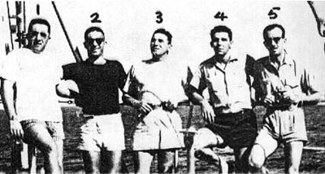 Icarai diving club with Baraúna on the right. イッカライダイビングクラブと右手にバラウナ。▼展開
The Brazilian skeptic Kentaro Mori pointed to another interview, this one with Baraúna himself just three years before his death, made by researcher Marco Antonio Petit in 1997. The headline posted by Mori reads, “Almiro Baraúna tells details of the trick.” However, when I saw the clip on YouTube, I couldn’t find any specific reference to Baraúna hoaxing the Trindade photos. There was some talk of him and his fellow companions of the Icarai diving club (who were also witnesses in the “Almirante Saldanha” ship) talking about a safe they had found, which they pretended to be an old French safe, and how he didn’t get along with the editor of the famous O’Cruzeiro magazine, and so on, but no “confession” of hoaxing the Trindade photos. There is a final point that I want to make that is particularly germane to anyone who lived in Latin America during the Cold War era. Pulling a high-profile hoax right under the noses of a military institution and keeping it up for a long time would have been certainly not impossible but foolish and even quite risky. The Latin American military forces back then had immense power and not the best record on human rights, to put it mildly, so that’s an additional factor to keep in mind.歴史的な意味を込めて、私のファイルの中から見つけたバラウナ本人のポルトガル語の古文書を転載しておきたい。それは1967年1月30日（事件から9年後）のタイプライターの文章で、バラウナの署名と小さな船のスケッチが添えられている。私の記憶では、おそらくニューヨークのICUFON（大陸間UFOネットワーク）のディレクターで、バラウナと文通し、トリンダーデの写真の良質なプリントを受け取っていたハンガリー系アメリカ人の故ケヴィツキー大佐から受け取ったのだろう。私の推測では、この手紙は、バラウナ氏がこの事件に関して何通も受け取ったであろう手紙に返信するために書いた「フォームレター」のようなものであると思われる。以下、ポルトガル語の原文と英訳を掲載する。 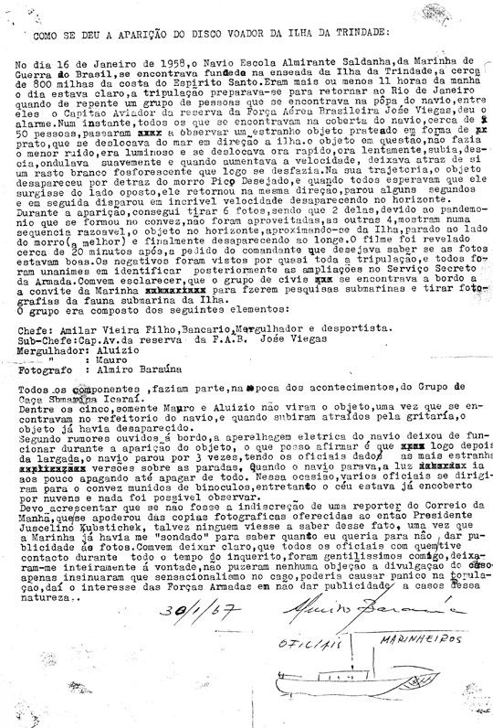 Original Baraúna statement in Portuguese. Click to enlarge. ポルトガル語によるバラウナ声明文の原文です。クリックすると拡大します。▼展開
For historical purposes, I want to reproduce an old document in Portuguese from Baraúna himself that I found in my files. It is a typewritten statement dated January 30, 1967 (nine years after the incident) signed by Baraúna and with a little sketch of a ship. As far as I can remember, I probably received it from the late Hungarian-American Col. Colman von Keviczky, director of ICUFON (Intercontinental UFO Network) in New York, who had corresponded with Baraúna and received good quality prints of the Trindade photos from him. My guess is that it was sort of a “form letter” done by Baraúna to respond to probably tons of letters he must have received about the case. Here is a reproduction of the original in Portuguese followed by an English translation:英文資料の翻訳です。 トリンダーデ島での空飛ぶ円盤の目撃はどのように行われたのか？ 1958年1月16日、ブラジル海軍の軍艦「アルミランテ・サルダンハ」は、エスピリトサント州の海岸から約800マイル離れたトリンダーデ島の入り江に停泊していた。午前11時頃、晴天に恵まれ、乗組員はリオデジャネイロに戻る準備をしていた。突然、船尾にいた一団、その中に元ブラジル空軍大尉の飛行士ジョゼ・ビエガスがいて、皆に警告した。 その瞬間、船のデッキにいた約50人の全員が、海から島に向かって移動する奇妙なオーサー型の銀色の物体を見始めた。物体は何の音も発せず、光り輝き、時には速く、時には遅く、滑らかに上下し、速度を上げると燐光性の白い軌跡を残し、あっという間に消えていきました。その軌道の中で、物体はピコ・デセハドの丘の後ろから消え、誰もが丘の反対側に現れると思った時、同じ方向に再び現れ、数秒停止した後、再び信じられないほどの速さで水平線の向こうに消えていきました。▼展開
English translation of the document: HOW DID THE SIGHTING OF THE FLYING DISC OVER TRINDADE ISLAND TOOK PLACE In January 16, 1958, the Brazilian war navy school ship “Almirante Saldanha” was docked at a cove on Trindade Island, about 800 miles from the coast of Espirito Santo. It was around 11 AM, clear weather, the crew was getting ready to return to Rio de Janeiro when suddenly a group of people located at the stern of the ship, amongst them the retired Brazilian Air Force Captain aviator Jose Viegas, alerted everyone. Instantly, everybody that was at the deck of the ship, around 50 people, started looking at a strange aucer-shaped silvery object which moved from the sea towards the island. The object did not emit any noise, it was luminous and shifted sometimes fast, then slow, moved up and down smoothly and when speeding it left a phosphorescent white trail that fade away very quickly. In its trajectory, the object disappeared from behind the hill Pico Desejado and when everybody expected that it was going to appear on the opposite side of the hill, it reappeared at the same direction, stopped for a few seconds and then it disappeared again in an incredible speed through the horizon.物体が戻ってきた最初の瞬間、私は6枚の写真を撮ることができたが、そのうちの2枚は甲板で生じた大混乱のために失われた。他の4枚は、物体が地平線上にあり、妥当な順序で、島と丘の中腹（最高）に接近し、最後に消えて遠ざかっていくのを写している。私は、20分後、写真の品質が良いかどうか知りたいという司令官の要求に従って、カメラからフィルムを取り出した。そのフィルムを見た乗組員のほとんどが、異口同音にブラジル海軍のシークレットサービスに報告した。 以下はその時の乗組員たちである。 チーフ アミラール・ヴィエイラ・フィーリョ、銀行家、ダイバー、アスリート 副長。ブラジル空軍元大尉ホセ・ビエガス氏 ダイバー。AluizioとMauro フォトグラファー アルミロ・バラウナ 上記のチームは、イッカライの海狩りグループのメンバーでもある。 5人のうち、マウロとアルイジオだけは船の厨房にいたため、物体を目撃しておらず、慌てて見に行ったときにはすでに消えていたそうだ。▼展開
At the first moment when the object came back I was able to shoot six pictures, two of them were lost due to the pandemonium created at the deck, the other four pictures show the object at the horizon, on a reasonable sequence, approaching the island and at the hill side (the best), and finally disappearing, moving away. I pulled out the film from my camera 20 minutes later following a request from the commander who wanted to know if the pictures were of good quality. Almost all the ship crew saw the film and they were unanimous in their reports to the Brazilian Navy Secret Service. These were the members of the ship crew: Chief: Amilar Vieira Filho, banker, diver and athlete Deputy Chief: Brazilian Air Force Retired Capitain Aviator Jose Viegas Divers: Aluizio and Mauro Photographer: Almiro Barauna The team above were also members of the sea hunting group of Icarai. Between the five members, only Mauro and Aluizio didn’t see the object since they were at the ship’s kitchen and when they rushed to see what was going on the object had already disappeared.甲板で聞いた噂では、物体が出現した時に船の電気機器が止まったそうです。私が確認できたのは、船が島を出た後、3回電気機器が止まり、職員は何が起こったのかしっかり説明できなかったということです。船が停止するたびに、明かりがゆっくりと消えていき、完全に消えてしまいました。その時、役員は双眼鏡を持って甲板に出たが、空はすでに雲でいっぱいで、何も見ることができなかった。 もし、コレイオ・ダ・マンハという新聞の記者が、当時のジュセリーノ・クビチェク大統領に提供した写真のコピーを押収するほどの知恵がなければ、この事実を誰も知ることはなかったかもしれない。はっきりさせておきたいのは、この調査の間中、私が接触したすべての将校はとても親切で、私はすっかり安心し、この事件の公表に何の異議も唱えなかったことである。ただ、センセーショナルな事件であるため、国民がパニックになる可能性があり、そのためブラジル軍はこのような事件の公表を避けようとしているとのことだった。 01/30/1967 [署名] アルミロ・バラウナ 士官 / 船員 [船の図面]▼展開
According to rumors I heard at the deck, the ship’s electric equipment stopped working during the apparition of the object; what I can confirm is that after the ship left the island it [electrical equipment]stopped three times and the officials didn’t have a firm explanation about what was happening. Every time the ship stopped, the lights faded out slowly until they were totally off. When it happened the officers walked to the deck with their binoculars, however, the sky was already full of clouds and they were not able to see anything. I need to say that if the reporter from a newspaper called Correio da Manha wasn’t smart enough to seize copies of the photos offered to then president Juscelino Kubitschek, maybe nobody would have known about these facts since the Navy had already “checked” me asking how much I wanted to not give any publicity to the pictures. I’d like to make it clear that all the officers with whom I had contact during the entire time of the inquiries where very nice to me, I felt completely comfortable and they didn’t impose any objection to the disclosure of the case. They only mentioned that the sensationalist nature of the case could cause panic amongst the population and this was the reason why the Brazilian Armed Forces were trying to avoid any publicity to cases of this nature. 01/30/1967 [signed] Almiro Baraúna Officers / Sailors [drawing of ship]* * * 1958年1月中旬、海軍艦船「アルミランテ・サルダンハ」で多くの目撃者が体験したUFO目撃は、バラウナの写真が本物かデマかはさておき、ビタンクールへの彼のいわゆる「自白」にもかかわらず、この議論は終わっていない。このことは、当時のブラジルの新聞に掲載された多くの見出しから明らかである。リオデジャネイロの権威ある新聞「O Jornal do Brasil」の見出しの1つはこうである。「本物の写真だ。公式ノートには「トリンダーデ上空で見た奇妙な物体」と書かれている。別の新聞の切り抜き（私のコピーはカットされているので、どのブラジル紙かは不明）には、次のような見出しと副題がある。"NAVY INQUIRY CONFIRMS THE EXISTENCE OF A FLYING DISC OVER TRINDADE ISLAND - 'Aerial object' saw several times on different days by technicians, sailors and officers of the Navy - 'All indicates that it was not a photographic montage' - EMA [Navy Intelligence Service] inquiry sent to deputy [Congressman] Sérgio Magalhães - conclusion of the several sightings - History of similar testonies".". トリンダーデ島事件の全容については、私がUFOブリーフィング・ドキュメント - The Best Available Evidence hereに書いたものを読むことができる。 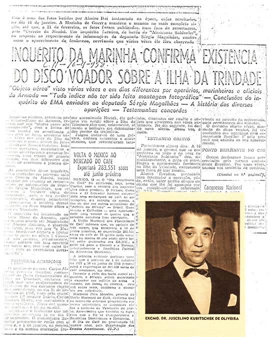 Trinidade news clip and photo of President Kubitschek. トリニダードのニュースクリップとクビツェク社長の写真。 (2022-09-29 end)▼展開
* * * A final point should be made: regardless of whether the Baraúna photos were real or hoaxed—a debate that is not finished despite his so-called “confession” to Bittancourt—there was a real UFO sighting experienced by many other witnesses in the “Almirante Saldanha” Navy ship in mid-January 1958. This much is clear from the many headlines in the Brazilian press at the time. One headline in the prestigious Rio de Janeiro newspaper O Jornal do Brasil reads: “Authentic Photos: Official note quotes ‘strange object seen over Trindade’.” Another newspaper clipping (my photocopy is cut so I am not sure which Brazilian paper it is) has the following headline and subtitle: “NAVY INQUIRY CONFIRMS THE EXISTENCE OF A FLYING DISC OVER TRINDADE ISLAND – ‘Aerial object’ seen several times on different days by technicians, sailors and officers of the Navy – ‘All indicates that it was not a photographic montage’ – Conclusions of the EMA [Navy Intelligence Service] inquiry sent to deputy [Congressman] Sérgio Magalhães – History of several sightings – Similar testimonies.” For a full treatment of the Trindade Island case you can read what I wrote about it in the UFO Briefing Document – The Best Available Evidence here.
初出
1958-01-16, Brazil : 有名な「ブラジル政府公認の UFO」の正体は「自転する orb」だ。その根拠を示す。 (2023-04-10)